본 포스트는 Youngwoon Lee 교수님의 Deep Reinforcement Learning 강의 자료 중 Lecture 13-2 — Sim2Real transfer #2 (총 51장)를 바탕으로, 강의를 처음 듣는 독자도 논리적 흐름을 따라갈 수 있도록 재구성한 것입니다. 같은 주제의 앞 데크(Lecture 13-1 Sim2Real transfer)는 18회차 포스트로 정리했으며, 이 데크의 2쪽은 13-1의 30쪽(18회차 11.2절)과, 마지막 51쪽은 13-1의 마지막 31쪽(18회차 12절)과 같은 슬라이드입니다. 데크는 두 부분으로 나뉩니다. 앞부분(2–19쪽)은 로봇 조작의 사례로 Jiang et al., TRANSIC: Sim-to-Real Policy Transfer by Learning from Online Correction, CoRL 2024를 다루고, 20쪽의 두 번째 표지(큰 제목 Robot Learning, 부제 Sim2Real transfer for quadruped locomotion) 뒤의 뒷부분은 사족 보행의 세 연구 Rudin et al., Learning to Walk in Minutes Using Massively Parallel Deep Reinforcement Learning, CoRL 2021(21–31쪽) · Kumar et al., RMA: Rapid Motor Adaptation for Legged Robots, RSS 2021(32–38쪽) · Zhuang et al., Robot Parkour Learning, CoRL 2023(39–50쪽)을 다룹니다. 49쪽은 Cheng and Shi et al., Extreme Parkour with Legged Robots, ICRA 2024의 영상 장면입니다. 원본 슬라이드는 영문으로 작성되어 있으며, 본문의 대섹션은 논문별 부분과 20쪽의 표지를 따라 나누고, 그 아래의 소절은 슬라이드 제목을 그대로 차용했습니다. 논문 표지를 옮긴 32, 39쪽과 발표 영상의 제목 화면인 21쪽은 각 대섹션의 첫머리에 넣었고, 1절은 논문 표지(3쪽) 앞에 놓인 2쪽의 사진으로 시작합니다. 제목이 없는 영상 슬라이드(4, 7, 30, 37, 48, 49쪽)는 바로 앞 슬라이드의 소절에 넣었고, 제목 없이 그래프만 있는 15쪽에는 소절을 따로 두었습니다. 한 요소씩 더해 가는 빌드 슬라이드(6 → 8 → 11쪽, 12 → 13쪽, 34 → 35쪽)는 완성된 장을 싣고 앞의 장들은 글로 다루었습니다. 50쪽의 하단 출처 표기는 RMA로 되어 있지만 내용은 Robot Parkour Learning의 정리입니다. 원 논문에서 가져온 식과 설명은 그 자리에 출처를 밝혔고, 그래프의 수치는 눈금에서 읽은 근삿값이며, 본문의 대섹션 번호는 원본 슬라이드에 없는 것을 읽기 편하도록 붙인 것입니다.
한 줄 요약 (TL;DR)
“시뮬레이션에서 배운 정책은, 간극이 작은 입력과 행동을 고르고 남은 간극을 무작위화로 덮거나 실세계에서 추정·교정할 때 비로소 실세계로 건너갑니다.”
18회차가 시뮬레이션-실세계 간극이 왜 생기는지와 시스템 식별·도메인 무작위화 같은 처방을 정리했다면, 이번 데크는 네 연구로 그 처방들이 실제 로봇에서 어떻게 조합되는지를 보여 줍니다. 가구 조립을 푸는 TRANSIC(CoRL 2024)은 특권 정보로 배운 교사 정책을 포인트 클라우드를 보고 관절 위치로 움직이는 학생 정책으로 증류해 간극을 미리 줄이고, 그래도 남는 간극은 실세계에서 사람이 개입해 모은 교정 데이터로 잔차 정책을 배워 메웁니다 — 그대로 옮기면 약 11%인 성공률이 약 81%가 됩니다. 사족 보행의 세 연구에서 Rudin et al.(CoRL 2021)은 한 GPU 위 4,096개 병렬 환경의 PPO와 도메인 무작위화로 20분이 안 되는 시간에 걷는 정책을 배우고, RMA(RSS 2021)는 시뮬레이션에서만 보이는 환경 요인의 인코딩을 최근 0.5초의 상태·행동 이력에서 추정하는 적응 모듈로 실세계에 실시간으로 적응하며, Robot Parkour Learning(CoRL 2023)은 관통 가능한 장애물에서 시작하는 2단계 강화학습과 증류로 깊이 영상을 보고 기어오르고 뛰어넘는 단일 정책을 얻습니다. 강의의 결론은 시뮬레이션이 로봇 정책을 안전하고 값싸게 배우는 길이고 도메인 무작위화가 전이의 열쇠이며 사족 보행에서는 시뮬레이션 강화학습이 잘 통하지만, 열린 세계의 다양성을 시뮬레이션하는 일은 여전히 비싸고 어렵다는 것입니다.
1. TRANSIC: 온라인 교정으로 배우는 시뮬레이션-실세계 정책 전이 (TRANSIC: Sim-to-Real Policy Transfer by Learning from Online Correction)
앞부분(2–19쪽)의 출처는 Stanford University의 Yunfan Jiang, Chen Wang, Ruohan Zhang, Jiajun Wu, Li Fei-Fei가 쓴 TRANSIC: Sim-to-Real Policy Transfer by Learning from Online Correction, CoRL 2024입니다. 18회차 4절은 실세계와 똑같은 시뮬레이터를 만들 수 없는 이유를 짚었고, 9절은 시각 무작위화의 한계를 보이며 “실세계는 언제나 어느 정도의 적응을 요구한다(Real world will always require some amount of adaptation)”고 적었습니다. TRANSIC은 그 적응을 사람의 온라인 교정으로 해내는 방법입니다. 시뮬레이션에서 최대한 강건한 정책을 만들어 간극을 미리 줄이고, 실세계에서 남는 간극만 소량의 교정 데이터로 메웁니다.
- 시뮬레이션-실세계 간극(sim2real gap), 시뮬레이션-실세계 전이(sim2real transfer), 도메인 무작위화(domain randomization), 시스템 식별(system identification)은 18회차의, 고유수용감각(proprioception)은 1회차·8회차의 번역을 따릅니다. 여기서 “전이”는 정책을 다른 환경으로 옮긴다는 뜻으로, 2회차 이후의 상태 전이 \(p(\mathbf{s}' \mid \mathbf{s}, \mathbf{a})\)와는 다른 말입니다.
- 특권 정보(privileged information)는 시뮬레이션에서만 얻을 수 있는 정답 수준의 정보(물체의 정확한 자세, 마찰 계수 등)이고, 이를 보고 배우는 정책을 교사 정책(teacher policy), 실세계에서도 얻을 수 있는 입력만 보고 교사를 흉내 내는 정책을 학생 정책(student policy)이라 부릅니다(1.4–1.5절).
- 증류(distillation)는 10회차 18.1절의 번역을 따르고, 교사와 학생의 행동 공간이 다른 증류를 행동 공간 증류(action space distillation)라 부릅니다(1.8절).
- 잔차 정책(residual policy)과 기반 정책(base policy)은 1.9절에서, 환경 요인(environment factor)과 적응 모듈(adaptation module)은 4.2절에서, 소프트·하드 동역학 제약(soft/hard dynamics constraints)은 5.3–5.4절에서 다룹니다. 환경의 동역학을 뜻하는 모델(model)은 시리즈의 관례대로 모형으로 옮깁니다(예: 동역학 모형).
- 기호 주의: \(\phi\)가 세 번 다른 뜻으로 나옵니다 — 1.6절에서는 TRANSIC의 포인트 클라우드 인코더, 3.4절에서는 보행 보상의 커널 함수, 4.2절에서는 RMA의 적응 모듈입니다. 셋 모두 원문(슬라이드 또는 원 논문)의 표기를 따른 것입니다. 마찬가지로 \(p\)는 3.1절의 확률 분포와 5.3절의 충돌 검사점으로, 굵은 \(\mathbf{1}\)은 1.9절의 게이트 \(\mathbf{1}_{g}\)와 5.3절의 지시 함수 \(\mathbf{1}[p]\)로 두 번씩 쓰입니다.
1.1 조이고, 끼우고, 뒤집기 (2쪽)
2쪽은 제목 없이 사진 한 장만 있는 슬라이드로, 18회차 11.2절에서 본 13-1 데크의 30쪽과 같은 장입니다. 초록 장막 앞의 검은 탁자 위에서 흰 로봇 팔이 그리퍼를 벌린 채 내려와 있고, 탁자에는 흑백 사각형 표식이 붙은 흰 가구 부품들이 놓여 있습니다. 노란 말풍선 세 개가 가구 조립에 필요한 동작의 이름을 붙입니다.
- Screwing(나사 조이기): 부품을 돌려 끼워 고정합니다.
- Inserting(끼우기): 부품을 구멍이나 홈에 정확히 맞춰 넣습니다.
- Flipping(뒤집기): 부품을 집어 방향을 바꿉니다.
세 동작은 모두 물체와 오래, 정밀하게 접촉해야 하는 동작입니다. 18회차 4절에서 본 것처럼 마찰·이득·밀도 같은 물리 매개변수는 정확히 알 수 없으므로, 이런 접촉이 많은 조작일수록 시뮬레이션에서 배운 정책을 실세계로 그대로 옮기기 어렵습니다. 앞부분 전체가 이 어려운 경우를 다룹니다.
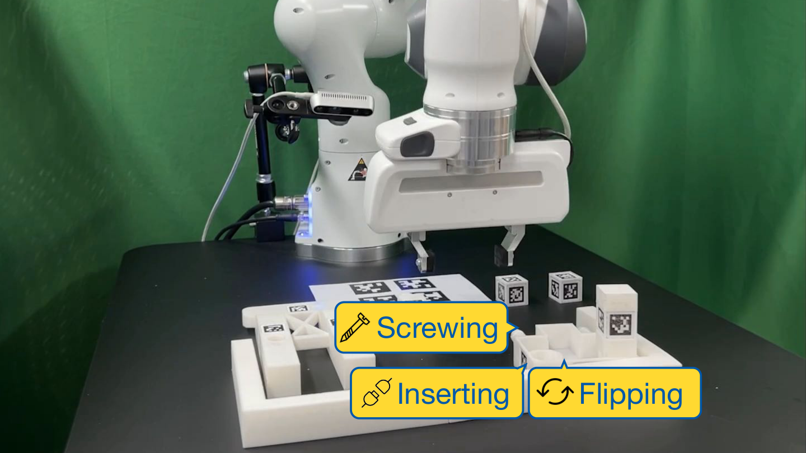
1.2 시뮬레이션 정책에서 잔차 정책까지 (3–4쪽)
3쪽은 논문의 첫 쪽을 옮긴 슬라이드로, 제목·저자·소속 아래에 TRANSIC의 흐름을 네 장면으로 요약한 그림이 있습니다. 과제는 전구를 전등 받침에 돌려 끼우는 것입니다.
- (a) 시뮬레이션 정책(Simulation Policy): 시뮬레이션 안에서 로봇 팔이 전구를 받침에 끼웁니다. 시뮬레이션에서는 정책이 과제를 해냅니다.
- (b) 그대로 배치하기(Direct Deployment): 같은 정책을 실세계 로봇에 그대로 옮깁니다. 이어지는 (c)·(d)가 교정과 성공을 보여 주므로, 이 단계는 과제를 끝내지 못하는 단계로 읽힙니다.
- (c) 인간 참여형 교정(Human-in-the-Loop Correction): 초록 사람 아이콘이 표시하는 사람이 로봇의 동작을 고쳐 줍니다. 왼쪽 장면의 곧은 초록 화살표는 위치를, 오른쪽 장면의 휘어진 초록 화살표는 회전을 고치는 교정입니다.
- (d) 학습된 잔차 정책으로 전이 성공(Successful Transfer with Learned Residual Policy): 교정에서 배운 잔차 정책을 더하자 전구가 받침에 끼워져 불이 켜집니다.
4쪽은 실험 영상의 한 장면으로, 흰 작업대 위에 흑백 표식 네 개가 붙어 있고 그 뒤에 로봇 팔과 거치대에 달린 카메라들이 보이는 실세계 실험 환경입니다.
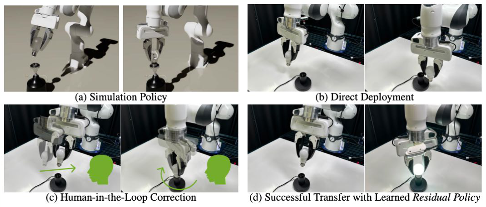
1.3 시뮬레이션-실세계 전이를 이루려면 (To Achieve Sim-to-Real)
5쪽은 앞부분 전체의 지도입니다.
- SOTA imitation learning fails on furniture assembly 😕 (최신 모방학습도 가구 조립에서는 실패한다)
- We need robust simulation policy (강건한 시뮬레이션 정책이 필요하다) — Domain randomization (도메인 무작위화), Point cloud (포인트 클라우드), Action space distillation (행동 공간 증류)
- Furthermore, real-world adaptation (나아가 실세계 적응) — Human correction (사람의 교정), Residual policy (잔차 정책)
첫 줄은 출발점입니다. 8회차 10절의 FurnitureBench는 가구 조립을 실세계에서 재현 가능한 벤치마크로 표준화했는데, 실세계 시연만으로 배우는 최신 모방학습은 이런 긴 조립 과제를 풀지 못합니다. 그렇다면 시뮬레이션에서 강화학습으로 배우고 옮겨 와야 합니다. 나머지 두 줄은 그 전이를 두 단계로 나눕니다.
| 단계 | 무엇을 하나 | 이 포스트 |
|---|---|---|
| 강건한 시뮬레이션 정책 | 도메인 무작위화로 다양한 조건을 경험시키고, 간극이 작은 입력(포인트 클라우드)과 간극이 작은 행동 공간(관절 위치)을 고르며, 특권 정보로 배운 교사를 그 공간으로 증류합니다 | 1.4–1.8절 |
| 실세계 적응 | 실세계에서 사람이 교정한 데이터로, 정책 전체가 아니라 교정분만 배우는 잔차 정책을 학습합니다 | 1.9절 |
두 단계의 관계가 중요합니다. 앞 단계가 간극을 충분히 줄여 두어야, 뒤 단계에서 사람이 고쳐야 할 것이 “작은 차이”로 남고 적은 데이터로 배울 수 있습니다.
1.4 TRANSIC 개요: 교사 정책 (Overview of TRANSIC)
6–13쪽은 원 논문의 개요 그림을 한 요소씩 채워 갑니다. 왼쪽 패널 (a) 행동 공간 증류를 통한 시뮬레이션 정책 학습(Simulation Policy Training Through Action Space Distillation)과 오른쪽 패널 (b) 사람의 교정에서 배우는 잔차 정책 학습(Residual Policy Learning from Human Correction) 가운데, 6쪽에는 (a)의 윗줄만 있습니다.
- 입력: 고유수용감각(Proprioception, 계기판 아이콘), 특권 정보(Privileged, 톱니바퀴 아이콘), 물체 자세(Object Poses, 전등 받침과 전구).
- 교사 정책(Teacher Policy, RL): 이 입력을 받아 강화학습으로 배웁니다.
- 출력: 작업 공간 제어기(Operational Space Controller, OSC)에 줄 명령입니다. 그림의 그리퍼 위 세 축 화살표가 말하듯, 손끝(엔드 이펙터)을 어느 방향으로 얼마나 움직일지를 지시합니다.
슬라이드 아래의 두 줄이 학습 방법입니다.
Train RL policy using PPO on FurnitureSim (FurnitureSim에서 PPO로 강화학습 정책을 학습한다) To facilitate RL, use privileged information and task-specific dense rewards (강화학습을 쉽게 하려고 특권 정보와 과제별 촘촘한 보상을 쓴다)
- PPO는 5회차 13절의 근위 정책 최적화이고, FurnitureSim은 가구 조립을 위한 시뮬레이터입니다. 7쪽의 영상 장면은 같은 장면을 수많은 환경에서 동시에 돌리는 병렬 시뮬레이션을 보여 줍니다.
- 특권 정보와 촘촘한 보상은 둘 다 시뮬레이션에서만 쓸 수 있는 혜택입니다. 18회차 2절(13-1 데크 5쪽)이 시뮬레이션의 장점으로 꼽은 “풍부한 보상(rich reward)”이 바로 이것입니다. 물체의 정확한 자세를 알면 “다리를 구멍에 얼마나 가까이 가져갔는가” 같은 촘촘한 보상을 계산할 수 있고, 강화학습의 탐색이 훨씬 쉬워집니다.
대가도 분명합니다. 실세계에는 특권 정보가 없으므로 교사 정책은 그대로 배치할 수 없습니다. 그래서 실세계에서도 얻을 수 있는 입력만 보는 학생 정책이 필요하고, 그것이 다음 절의 주제입니다. 같은 “특권 정보로 교사를 배우고, 관측 가능한 입력의 학생으로 옮긴다”는 구조는 뒤의 RMA(4절)와 Robot Parkour Learning(5절)에서도 모양을 바꿔 다시 나옵니다.
1.5 TRANSIC 개요: 학생 정책 (Overview of TRANSIC (Sim))
8쪽은 (a) 패널의 아랫줄을 채웁니다.
- 입력: 합성 포인트 클라우드(Synthetic Point Cloud)와 고유수용감각. 그림의 포인트 클라우드는 전등 받침이 무지개색, 전구가 파란색으로 칠해져 있습니다.
- 학생 정책(Student Policy): 이 입력만 보고 행동을 냅니다.
- 출력: 관절 위치 제어기(Joint Position Controller)에 줄 목표 관절 위치입니다. 그림의 로봇 팔 관절마다 주황 회전 화살표가 그려져 있습니다.
교사와 학생은 두 군데서 다릅니다. 입력이 특권 정보에서 포인트 클라우드로, 출력이 손끝 명령(OSC)에서 관절 위치로 바뀝니다. 슬라이드 아래의 한 줄이 그 이유를 요약합니다.
Robust simulation policy: (1) use point cloud, (2) joint position control (강건한 시뮬레이션 정책: (1) 포인트 클라우드를 쓰고, (2) 관절 위치로 제어한다)
9쪽과 10쪽이 두 선택을 하나씩 정당화합니다.
1.6 (1) 포인트 클라우드는 시뮬레이션-실세계 간극이 작다 ((1) Point Cloud Has Little Sim2real Gap)
포인트 클라우드(point cloud)는 깊이 센서가 측정한 표면의 점들을 3차원 좌표의 집합으로 모은 것입니다. 9쪽은 시뮬레이션과 실세계에서 얻은 포인트 클라우드를 나란히 보여 주고, 오른쪽에 장점 세 가지를 적습니다.
- 시각적 다양성이 적다(Less visual diversity): 포인트 클라우드에는 색, 질감, 조명이 없고 기하만 남습니다. 18회차 8–9절에서 본 것처럼 시각 무작위화가 어려운 이유는 실세계의 겉모습이 너무 다양하기 때문인데, 포인트 클라우드는 그 다양성의 대부분을 애초에 입력에서 지웁니다.
- 카메라 자세에 불변이다(Invariant to camera poses): 영상은 카메라를 조금만 옮겨도 화면 전체가 바뀌지만, 보정된 카메라의 점들을 로봇 기준의 좌표계로 옮겨 모으면 같은 장면은 카메라가 어디 있든 거의 같은 점 집합이 됩니다.
- 합성 입력과 실제 입력의 차이가 적다(Less discrepancies between synthetic and real inputs): 위 두 성질 덕분에 시뮬레이션에서 만든 점과 실세계 센서가 낸 점이 비슷해집니다.
그래도 차이가 0은 아닙니다. 실제 깊이 센서의 점에는 잡음과 빈 곳이 있고, 그림에서도 실세계 쪽 점들이 조금 더 성기고 들쭉날쭉해 보입니다. 그래서 슬라이드는 네 번째 줄에 포인트 클라우드 정규화(point cloud regularization)를 적습니다.
\[ \beta\, \mathbb{E}_{\mathcal{D}^{pcd}}\!\left[ \big\lVert \phi(\mathbf{P}^{real}) - \phi(\mathbf{P}^{sim}) \big\rVert^2 \right] \]
원 논문에 따르면 각 기호의 뜻은 다음과 같습니다.
- \(\phi\): 학생 정책의 포인트 클라우드 인코더입니다. 점 집합을 특징 벡터로 바꿉니다.
- \((\mathbf{P}^{real}, \mathbf{P}^{sim})\): 같은 장면을 실세계와 시뮬레이션에서 각각 얻은 짝지은 포인트 클라우드이고, \(\mathcal{D}^{pcd}\)는 이런 짝을 따로 모은 데이터셋입니다.
- \(\beta\): 정규화의 세기를 정하는 가중치입니다.
이 항은 같은 장면의 실세계 점과 시뮬레이션 점이 인코더를 지나면 같은 특징이 되도록 끌어당깁니다. 인코더가 두 입력을 구별하지 못하게 되면, 그 위의 정책은 시뮬레이션에서 배운 그대로 실세계 입력에 반응합니다. 원 논문은 학생 정책을 학습할 때 이 항을 함께 최소화합니다. 이 정규화가 얼마나 중요한지는 1.12절의 절제 실험이 보여 주고, 짝지은 데이터를 얻는 비용은 1.14절의 한계로 돌아옵니다.
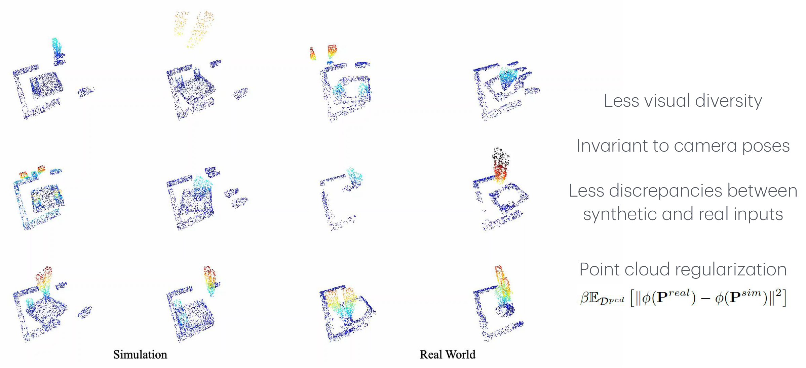
1.7 (2) 관절 위치 제어기는 시뮬레이션-실세계 간극이 작다 ((2) Joint Position Controller Has Little Sim2real Gap)
10쪽은 두 번째 선택, 행동 공간을 정당화합니다. 그림은 머리·몸통·팔의 관절 이름이 하나하나 적힌 이동형 로봇의 도해이고, 두 방식의 제어가 대비됩니다.
- 엔드 이펙터 제어(End-effector control, OSC controller): 그리퍼 끝에 그려진 주황 세 축 화살표처럼, 정책이 손끝을 어느 방향으로 움직일지를 지시합니다. 작업 공간 제어기는 이 손끝 명령을 각 관절의 토크로 바꾸는데, 그 변환에 로봇의 기구학·동역학 모형(관절마다의 길이, 질량, 관성 등)이 들어갑니다. 주황 꺾쇠가 왼쪽의 관절 이름 열 개를 묶으며 “Need to know robot parameters for all these joints”(이 모든 관절의 로봇 매개변수를 알아야 한다)라고 적는 이유입니다.
- 관절 위치 제어(joint position control): 정책이 각 관절의 목표 각도를 직접 내고, 관절마다의 저수준 제어기가 그 각도를 따라갑니다. 손끝 명령을 관절로 풀어 주는 모형 의존적인 변환이 없습니다.
왼쪽의 인용문이 결론입니다.
“Directly controlling joint position has less error” (관절 위치를 직접 제어하는 편이 오차가 적다)
로봇 매개변수가 시뮬레이션과 실세계에서 조금씩 다르면, 같은 손끝 명령도 시뮬레이션과 실세계에서 다른 관절 움직임으로 풀립니다. 행동 공간 자체가 간극을 키우는 셈입니다. 관절 위치 제어는 이 변환을 거치지 않으므로, 같은 행동이 두 세계에서 더 비슷한 결과를 냅니다.
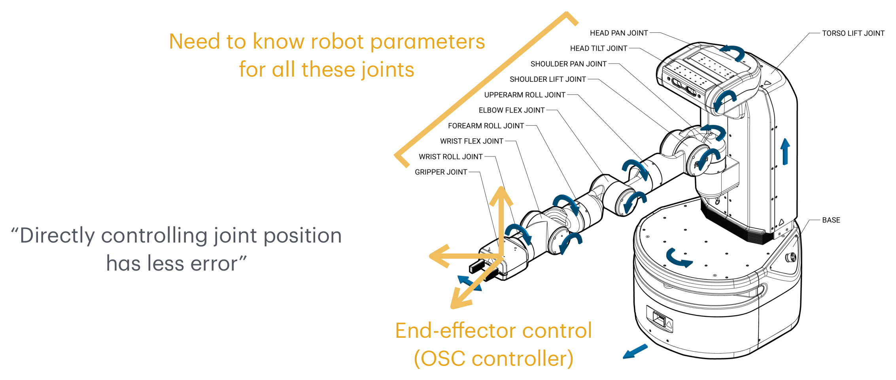
1.8 행동 공간 증류 (Overview of TRANSIC (Sim): Action Space Distillation)
11쪽은 8쪽의 그림에 마지막 요소를 더합니다. 교사의 OSC에서 학생의 관절 위치 제어기로 내려오는, 보라에서 주황으로 바뀌는 곡선 화살표와 주황 기울임 글씨 Action Space Distillation(행동 공간 증류)입니다.
보통의 증류는 같은 행동 공간 안에서 교사의 행동을 학생이 흉내 내게 합니다. 여기서는 교사가 손끝 공간에서, 학생이 관절 공간에서 행동하므로, 증류가 입력(특권 정보 → 포인트 클라우드)과 출력(OSC → 관절 위치)을 동시에 건너야 합니다.
- 원 논문에 따르면 학생은 교사가 시뮬레이션에서 만든 궤적을 관절 위치 행동으로 다시 라벨링한 데이터로 행동 복제(1회차)해 배웁니다. 교사가 손끝 명령으로 움직이는 동안 로봇의 관절이 실제로 어떻게 움직였는지가 학생의 정답이 되는 셈입니다.
- 원 논문의 학생 정책은 행동을 가우시안 혼합(GMM) 분포로 냅니다. 1회차가 짚은 시연의 다봉성 — 같은 상황에서 여러 행동이 모두 옳을 수 있음 — 을 표현하기 위한 선택으로 볼 수 있습니다.
슬라이드는 교사가 왜 OSC를 쓰는지 따로 설명하지 않습니다. 다만 시뮬레이션 안에서는 로봇 매개변수가 정확히 주어지므로 1.7절의 약점이 문제되지 않고, 손끝의 움직임을 직접 지시하는 편이 촘촘한 보상과 맞물려 강화학습으로 배우기 쉽다고 볼 수 있습니다. 배우기 쉬운 공간에서 교사를 배우고, 옮기기 쉬운 공간으로 증류한다는 분업입니다.
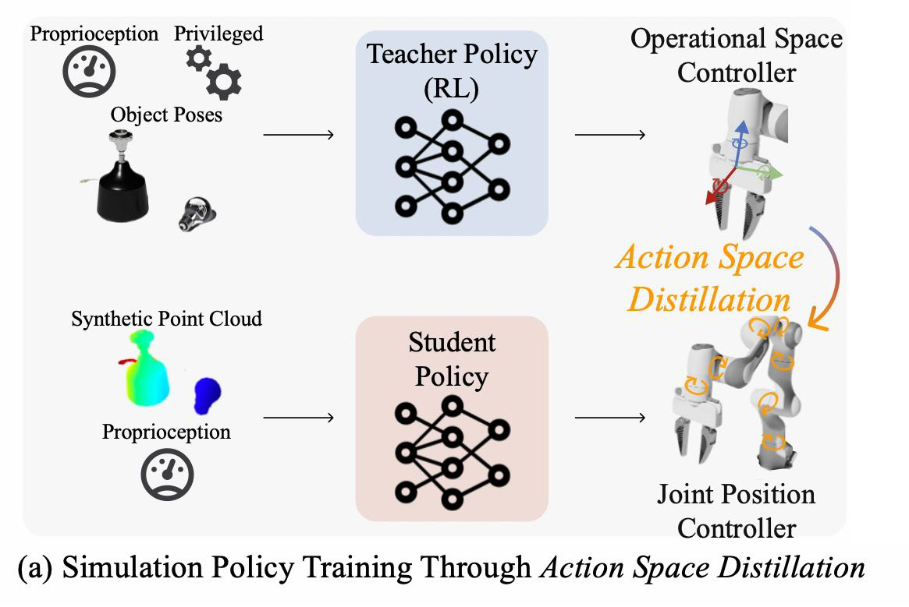
1.9 TRANSIC 개요: 실세계의 사람 교정과 잔차 정책 (Overview of TRANSIC (Real))
12–13쪽은 오른쪽 패널 (b)를 채웁니다. 이제 학생 정책은 실세계에 배치되는 기반 정책(Base Policy)이 됩니다.
사람이 지켜보다가 고쳐 준다
12쪽의 흐름은 다음과 같습니다.
- 기반 정책(Base Policy)이 실세계에서 과제를 수행하고, 사람 조작자(Human Operator)가 곁에서 지켜봅니다. 물음표가 든 머리 아이콘과 조이스틱 아이콘이 그 역할을 나타냅니다.
- 사람은 매 순간 “교정할까, 말까?(Correct or not?)”를 판단합니다.
- 개입이 필요하면 사람이 로봇을 직접 움직여 고칩니다 — 인간 참여형 데이터 수집(Human-in-the-Loop Data Collection). 사진 속 초록 화살표가 교정 방향입니다. 원 논문에 따르면 사람은 3Dconnexion SpaceMouse라는 3차원 입력 장치로 로봇을 움직입니다.
- 이렇게 모인 개입 기록이 교정 데이터셋(Correction Dataset)이 됩니다.
슬라이드 아래의 한 줄이 이 단계의 목적입니다.
Evaluate simulation policy in the real world with human in the loop (사람이 참여한 채로 시뮬레이션 정책을 실세계에서 평가한다)
정책이 잘하는 동안은 사람이 손대지 않고, 잘못될 때만 개입합니다. 1회차 5.2절의 Human-Gated DAgger와 같은 데이터 수집 방식입니다. 차이는 모은 데이터를 어디에 쓰느냐에 있습니다.
차이만 배운다: 잔차 정책
13쪽은 아래 문구를 바꿉니다.
Learn “residual policy” using human correction data — Learn only the difference (사람의 교정 데이터로 “잔차 정책”을 배운다 — 차이만 배운다)
잔차 정책(residual policy) \(\pi^{R}\)은 기반 정책을 다시 학습하지 않고, 기반 정책의 행동에 더할 보정분만 배웁니다. 원 논문에 따르면 교정 데이터에서 잔차 정책의 정답은 사람이 개입하기 직전과 직후의 관절 상태 차이입니다.
\[ \mathbf{a}^{R} = \mathbf{q}^{post} \ominus \mathbf{q}^{pre} \]
- \(\mathbf{q}^{pre}\): 사람이 개입하기 직전의 관절 상태, \(\mathbf{q}^{post}\): 사람이 고쳐 놓은 뒤의 관절 상태입니다.
- \(\ominus\): 관절 상태 사이의 차를 뜻하는 원 논문의 기호입니다.
잔차 정책은 이 정답의 가능도를 최대화하도록, 곧 손실 \(-\mathbb{E}\big[\log \pi^{R}(\mathbf{a}^{R} \mid \mathbf{o})\big]\)를 최소화하도록 배웁니다(\(\mathbf{o}\)는 관측). 배치하는 정책은 원 논문의 표기로 다음과 같습니다.
\[ \pi^{B} \oplus \mathbf{1}_{g}\, \pi^{R} \]
- \(\pi^{B}\): 기반 정책입니다. 학생 정책을 그대로 씁니다.
- \(\oplus\): 관절 위치 공간에서 보정분을 더한다는 뜻입니다.
- \(\mathbf{1}_{g}\): 잔차를 지금 적용할지를 정하는 게이트(gate)입니다. 원 논문에서는 잔차 정책과 인코더를 공유하는 게이트를 분류 문제로 학습해, 사람이 “교정할까, 말까?”를 판단하던 역할을 대신하게 합니다.
왜 정책 전체가 아니라 차이만 배울까요? 앞 단계 덕분에 기반 정책은 과제의 대부분을 이미 해냅니다. 남은 것은 실세계에서만 드러나는 작은 어긋남이므로, 그것만 배우는 문제는 정책 전체를 다시 배우는 문제보다 훨씬 작고, 적은 데이터로 풀립니다. 기반 정책을 건드리지 않으므로 시뮬레이션에서 배운 능력을 실세계의 적은 데이터로 덮어써 잃어버릴 위험도 없습니다. 원 논문에 따르면 TRANSIC이 쓴 실세계 데이터는 과제별로 17–100개의 궤적, 그 안의 교정 58–489회입니다(1.10절의 네 하위 과제 순서로 궤적 20·100·90·17개, 교정 62·434·489·58회). 조이기의 17개는 1.10절에서 볼 14쪽의 “20–100개”보다 조금 적습니다.
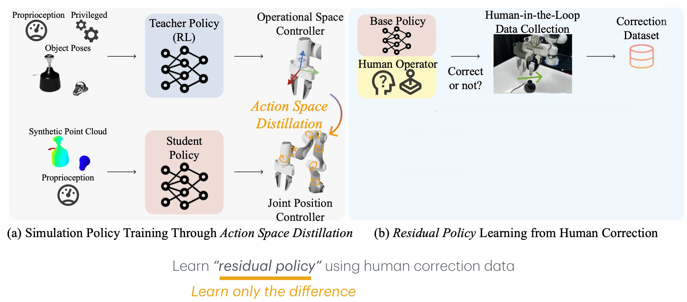
- 교사 정책: FurnitureSim에서 고유수용감각·특권 정보·물체 자세를 입력으로, 과제별 촘촘한 보상과 PPO로 학습합니다. 행동은 작업 공간 제어기(OSC)의 손끝 명령입니다.
- 학생 정책: 교사의 궤적을 관절 위치 행동으로 다시 라벨링하고, 합성 포인트 클라우드와 고유수용감각을 입력으로 행동 복제합니다. 이때 포인트 클라우드 정규화 \(\beta\,\mathbb{E}_{\mathcal{D}^{pcd}}[\lVert \phi(\mathbf{P}^{real}) - \phi(\mathbf{P}^{sim}) \rVert^2]\)를 함께 최소화합니다.
- 교정 데이터 수집: 학생을 기반 정책 \(\pi^{B}\)로 실세계에 배치하고, 사람이 필요할 때만 개입해 교정 데이터셋을 모읍니다.
- 잔차 정책: 교정 직전·직후의 관절 상태 차 \(\mathbf{a}^{R}\)를 정답으로 잔차 정책 \(\pi^{R}\)과 게이트를 학습합니다.
- 배치: \(\pi^{B} \oplus \mathbf{1}_{g}\,\pi^{R}\)로 행동합니다.
1.10 FurnitureBench (FurnitureBench, Heo et al. 2023)
14쪽은 실험의 무대입니다. FurnitureBench(8회차 10절)는 3D 프린터로 출력한 가구 부품과 시판 장비로 실세계 가구 조립을 누구나 재현할 수 있게 표준화한 벤치마크이고, TRANSIC은 그 가운데 사각 탁자 조립을 네 하위 과제로 나누어 평가합니다.
- 안정시키기(stabilize): 탁자 상판을 초록 ㄷ자 틀의 구석으로 밀어 넣어 고정합니다.
- 다가가 집기(reach and grasp): 바닥에 누운 탁자 다리에 다가가 집습니다.
- 끼우기(insert): 집은 다리를 상판 모서리의 구멍에 맞춰 넣습니다.
- 조이기(screw): 구멍에 선 다리를 돌려 조입니다.
평가 방식은 다음과 같습니다.
Evaluation: Policy is trained or fine-tuned with 20–100 real-world demos (정책은 실세계 시연 20–100개로 학습되거나 미세 조정된다) / Measure success rates (each subtask) on 20 episodes (하위 과제마다 20개 에피소드로 성공률을 잰다)
실세계 데이터를 쓰는 방법들은 20–100개 규모의 실세계 데이터로 학습되거나 미세 조정된다는 뜻입니다. 하위 과제마다 20개 에피소드이므로 성공률은 5% 단위로 나옵니다.
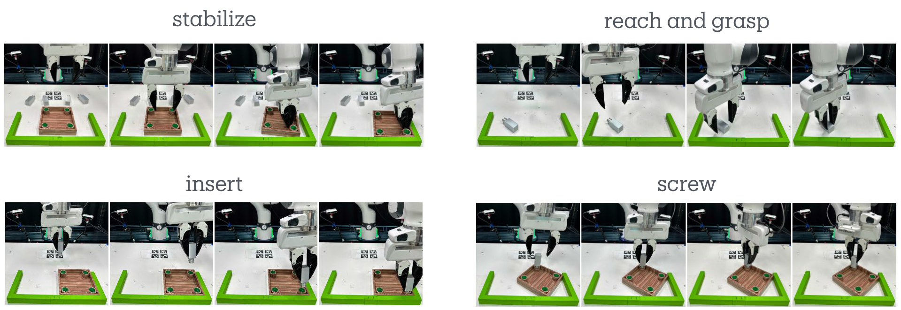
1.11 TRANSIC은 80%의 성공률을 낸다 (TRANSIC Achieves 80% Success Rates)
15쪽은 제목 없이 막대그래프와 주황 주석만 있는 슬라이드입니다. 막대는 방법별 성공률이고, 가로축 아래의 묶음 이름(Traditional Sim-to-Real, Interactive IL, Real Data Only)은 주황 상자에 일부 가려져 있습니다. 원 논문의 분류에 따라 비교 방법을 묶으면 다음과 같습니다. 막대의 높이는 그래프 눈금에서 읽은 근삿값입니다.
| 묶음 | 방법 | 무엇을 하나 | 성공률 |
|---|---|---|---|
| — | TRANSIC | 1.4–1.9절의 방법 | 약 81% |
| 전통적 시뮬레이션-실세계 전이 (Traditional Sim-to-Real) | Direct Transfer | 시뮬레이션 정책을 미세 조정 없이 그대로 배치 | 약 11% |
| DR. & Data Aug. | 도메인 무작위화와 데이터 증강 | 약 36% | |
| BC Fine-Tune | 실세계 데이터로 행동 복제 미세 조정 | 약 39% | |
| IQL Fine-Tune | 실세계 데이터로 IQL(9회차 20절) 미세 조정 | 약 22% | |
| 상호작용 모방학습 (Interactive IL) | HG-Dagger | 사람이 개입한 데이터로 정책을 갱신(1회차 5.2절) | 약 42% |
| IWR | 개입 데이터에 가중치를 주어 회귀하는 상호작용 모방학습 (intervention weighted regression) | 약 46% | |
| 실세계 데이터만 (Real Data Only) | BC | 실세계 데이터만으로 행동 복제 | 약 22% |
| BC-RNN | 순환 신경망 정책의 행동 복제 | 약 17% | |
| IQL | 실세계 데이터만으로 오프라인 강화학습 | 약 2% |
TRANSIC의 약 81%는 16쪽 표의 Original 평균 81%와 같은 값입니다. 슬라이드의 주석 네 개가 비교의 요점을 하나씩 짚습니다.
- TRANSIC achieves 80% success rates (TRANSIC은 80%의 성공률을 낸다)
- Sim2real gap is large! (시뮬레이션-실세계 간극이 크다!): 그대로 옮긴 Direct Transfer는 약 11%에 그칩니다. 시뮬레이션에서 잘하는 정책도 실세계에서는 거의 실패합니다.
- Simply fine-tuning with real-world data is not sufficient (실세계 데이터로 단순히 미세 조정하는 것으로는 부족하다): 이 주석의 주황 상자로 묶인 다섯 방법 — 도메인 무작위화·데이터 증강, 실세계 데이터로 미세 조정, 상호작용 모방학습 — 은 가장 좋은 IWR도 약 46%입니다. 실세계 데이터를 더하는 것만으로는 부족하다는 뜻이며, TRANSIC과의 차이가 어느 구성 요소에서 오는지는 1.12절의 절제 실험과 1.14절의 한계에서 다시 봅니다.
- Tasks are challenging to solve only with small real-world data (적은 실세계 데이터만으로는 과제를 풀기 어렵다): 시뮬레이션 없이 실세계 데이터만 쓴 세 방법은 약 22% 이하이고, 오프라인 강화학습인 IQL은 거의 0입니다. 1.3절의 출발점 “최신 모방학습도 가구 조립에서는 실패한다”가 숫자로 확인됩니다.
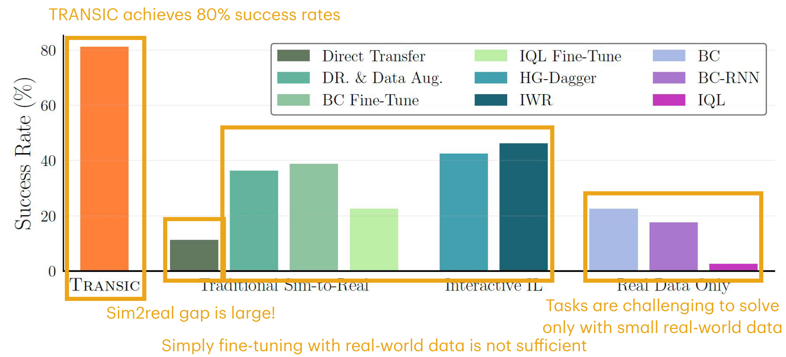
1.12 무엇이 결정적인가 (What is Critical?)
16쪽은 TRANSIC의 구성 요소를 하나씩 바꾼 절제 실험(ablation)입니다. 평균은 네 하위 과제 성공률의 산술평균입니다(w/ Human Gating의 82.5%는 82%로 적혀 있습니다).
| 설정 | 평균 | 안정시키기 | 다가가 집기 | 끼우기 | 조이기 |
|---|---|---|---|---|---|
| Original (원래 방법) | 81% | 100% | 95% | 45% | 85% |
| w/ Human Gating (사람이 게이트) | 82% | 100% | 95% | 50% | 85% |
| Reduced Cameras (카메라 축소) | 80% | 95% | 90% | 40% | 95% |
| Noisy Correction (잡음 섞인 교정) | 76% | 85% | 80% | 45% | 95% |
| w/o Regularization (정규화 없음) | 55% | 85% | 55% | 20% | 60% |
- w/ Human Gating: 잔차를 언제 적용할지를 학습된 게이트 \(\mathbf{1}_{g}\) 대신 사람이 정한 설정입니다. 82%로 원래 방법(81%)과 거의 같으므로, 학습된 게이트가 사람의 판단을 충분히 대신합니다.
- Reduced Cameras와 Noisy Correction: 카메라 수를 줄이거나 사람의 교정에 잡음이 섞여도 80%, 76%로 크게 떨어지지 않습니다. 방법이 입력 구성과 교정의 질에 비교적 강건합니다.
- w/o Regularization: 1.6절의 포인트 클라우드 정규화를 빼면 평균이 55%로 가장 크게 떨어집니다. 다가가 집기(95% → 55%)의 하락이 가장 크고, 끼우기(45% → 20%)와 조이기(85% → 60%)도 25%p씩 떨어집니다.
슬라이드는 마지막 줄을 주황 상자로 강조하고 이렇게 적습니다.
Point cloud regularization is crucial. But, this is not cheap to get in the real world 😛 (포인트 클라우드 정규화가 결정적이다. 하지만 실세계에서 이것을 얻는 비용은 싸지 않다)
정규화에는 같은 장면의 실세계·시뮬레이션 포인트 클라우드 짝 \(\mathcal{D}^{pcd}\)가 필요합니다. 실세계 장면을 시뮬레이션에서 그대로 재현하고 짝을 맞추는 일 자체가 손이 많이 가므로, 가장 중요한 구성 요소가 가장 비싼 구성 요소이기도 합니다. 끼우기는 원래 방법에서도 45%로 네 하위 과제 가운데 가장 낮아, 정밀한 접촉이 여전히 어렵다는 것도 보여 줍니다.
1.13 실패 사례 (Failures)
17쪽은 TRANSIC이 실패한 네 장면입니다.
- 휜 그리퍼(bended gripper): 벌어진 그리퍼의 왼쪽 손가락이 휘어 있고, 다리가 비스듬히 기운 채 상판 모서리 구멍에 걸쳐 있습니다.
- 부정확한 끼우기(inaccurate insertion): 다리를 세로로 쥐었지만 구멍과 어긋난 자리로 내리고 있습니다.
- 과하게 조이기(over-screwing): 다리 세 개가 선 상판 위에서 그리퍼가 다리 하나를 쥐고 있습니다. 이름표대로라면 필요 이상으로 조이다 실패한 장면입니다.
- 불안정한 집기(unstable grasping): 그리퍼가 초록 부품을 비스듬히 쥐어 부품이 기울어져 있습니다.
네 실패는 모두 1.1절의 접촉이 많은 정밀 조작에서 생깁니다. 쥐는 자세가 조금 틀어지거나 힘의 크기가 조금 어긋나는 일은 시뮬레이션이 정확하게 흉내 내기 어려운 부분으로 보입니다.
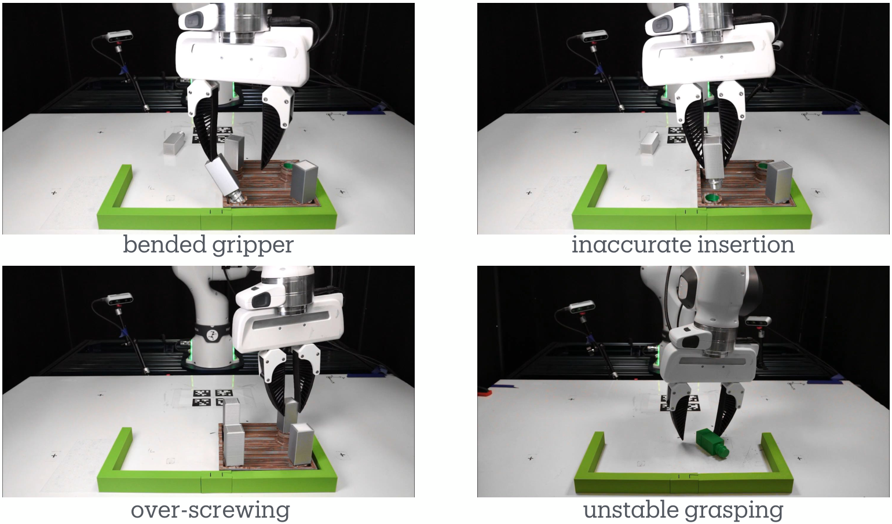
1.14 한계 (Limitations)
18쪽은 한계를 저자들의 것과 발표자(강의자)의 것으로 나누어 적습니다.
저자들이 밝힌 한계 (From authors)
- 단순한 그리퍼의 탁상 시나리오에 한정된다(Limited to table-top scenarios with simple gripper): 실험은 작업대 위에서 두 손가락 그리퍼로만 이루어졌습니다.
- 사람의 노력이 상당히 든다(Significant human effort required): 1.9절의 교정 데이터는 사람이 로봇 곁에서 지켜보며 수백 번 개입해야 모입니다.
- 시뮬레이션 정책을 얻는 일이 쉽지 않다(Simulation policy is not trivial to achieve): 특권 정보, 과제별 촘촘한 보상, 행동 공간 증류까지 갖춰야 강건한 시뮬레이션 정책이 나옵니다.
발표자가 덧붙인 한계 (From presenter)
- 짝지은 포인트 클라우드 데이터를 얻는 일이 쉽지 않다(Getting paired point cloud data is not trivial): 1.12절에서 본 가장 결정적인 구성 요소의 비용입니다.
- RGB 입력을 버리면 어떤 과제는 풀 수 없다(Ignoring RGB inputs can make some tasks not feasible): 포인트 클라우드는 기하만 남기므로, 색이나 무늬로만 구별되는 물체를 다뤄야 하는 과제에서는 필요한 정보가 사라집니다. 1.6절의 장점인 “시각적 다양성이 적다”의 뒷면입니다.
- 잔차 정책에 대한 절제 실험이 없다(No ablation study about residual policy): 16쪽의 절제 실험은 게이트·카메라·교정의 질·정규화를 바꿔 보지만, 잔차 정책이라는 구성 요소 자체를 빼거나 바꿔 본 줄은 없습니다. 그래서 81%라는 결과 가운데 잔차 정책이 얼마만큼을 맡는지는 이 표만으로 가늠할 수 없습니다.
1.15 핵심 정리 — TRANSIC (Key Takeaways)
- 사람의 교정 데이터는 시뮬레이션-실세계 간극을 효과적으로 메울 수 있습니다 😀 (Human correction data can effectively bridge the sim2real gap).
- 시뮬레이션-실세계 전이에는 엔드 이펙터 제어보다 관절 위치 제어가 낫습니다 (Joint position control is better for sim2real than end-effector control).
- 정교한 정규화가 필요합니다 😥 (Requires sophisticated regularization).
세 줄은 각각 1.9·1.11절(교정 데이터와 잔차 정책, 약 11% → 약 81%), 1.7절(행동 공간의 선택), 1.6·1.12절(포인트 클라우드 정규화, 빼면 55%)에 대응합니다. 슬라이드 오른쪽 아래에는 프로젝트 페이지 주소 transic-robot.github.io가 적혀 있습니다.
2. 사족 보행을 위한 시뮬레이션-실세계 전이 (Sim2Real Transfer for Quadruped Locomotion)
20쪽은 데크 안의 두 번째 표지입니다. 큰 제목은 Robot Learning, 부제는 Sim2Real transfer for quadruped locomotion(사족 보행을 위한 시뮬레이션-실세계 전이)이고, 아래에 강의자의 이름이 있습니다.
51쪽의 정리대로 사족 보행은 시뮬레이션 강화학습이 잘 통하는 분야입니다. 18회차 7절에서 RMA는 “물리 무작위화가 통한다(Physics domain randomization works!)”는 예로 짧게 등장했는데, 이 부분에서는 그 연구를 포함한 세 연구를 자세히 봅니다. 1절의 가구 조립과 비교하면 출발점이 다릅니다. 걷기에는 사람이 보여 줄 시연이 없으므로(1회차 3.2절의 사족 보행 로봇), 모방학습 대신 강화학습으로 배워야 합니다. 18회차 1절의 A Walk in the Park처럼 실세계에서 직접 배우는 길도 있지만, 이 부분의 세 연구는 모두 시뮬레이션에서 배워 실세계로 옮깁니다.
| 연구 | 슬라이드 | 이 포스트 | 배치 때의 정책 입력 | 시뮬레이션-실세계 전이의 열쇠 |
|---|---|---|---|---|
| Learning to Walk in Minutes (Rudin et al., CoRL 2021) | 21–31쪽 | 3절 | 고유수용감각 + 명령 + 지형 스캔 점 | 한 GPU 위 대규모 병렬 PPO, 무작위 지형, 도메인 무작위화 |
| RMA (Kumar et al., RSS 2021) | 32–38쪽 | 4절 | 관절 각도 + 직전 행동 + 이력에서 추정한 환경 인코딩 (시각 없음) | 최근 0.5초의 이력에서 환경 요인의 인코딩을 추정하는 적응 모듈 |
| Robot Parkour Learning (Zhuang et al., CoRL 2023) | 39–50쪽 | 5절 | 깊이 영상 + 고유수용감각 | 깊이 잡음·필터, 소프트 동역학 사전학습 → 하드 동역학 미세 조정 → 단일 정책으로 증류 |
| 정리 | 51쪽 | 6절 | — | 도메인 무작위화가 열쇠, 열린 세계의 다양성은 여전히 어렵다 |
3. 대규모 병렬 심층 강화학습으로 몇 분 만에 걷기 배우기 (Learning to Walk in Minutes Using Massively Parallel Deep Reinforcement Learning)
21쪽은 발표 영상의 제목 화면입니다. 저자는 Nikita Rudin, David Hoeller, Philipp Reist, Marco Hutter이고, 화면 아래에 ETH Zürich, Robotic Systems Lab(RSL), NVIDIA의 로고가 있습니다. 출처는 CoRL 2021입니다. 제목의 “몇 분 만에(in minutes)”가 이 연구의 요점으로, 걷는 정책을 배우는 데 드는 시간을 대규모 병렬화로 몇 분에서 수십 분 수준으로 줄입니다.
3.1 문제 정식화 (Problem Formulation)
22쪽은 사족 보행을 2회차의 마르코프 결정 과정으로 적습니다.
- 상태 \(\mathbf{s}\)(State): 관절 각도와 속도(Joint angles, velocities), 그리고 선택적으로 카메라와 라이다((optional) camera, lidar).
- 정책 \(\pi(\mathbf{a} \mid \mathbf{s})\): 50Hz, 곧 1초에 50번 행동을 냅니다.
- 행동 \(\mathbf{a}\)(Action): 관절 위치 또는 모터 토크(Joint position or motor torque).
- 보상 \(p(r_t \mid \mathbf{s}_t, \mathbf{a}_t)\): 빠르게 걷기와 명령 추종(Fast walking + command following).
- 전이 \(p(\mathbf{s}_{t+1} \mid \mathbf{s}_t, \mathbf{a}_t)\): 실세계의 물리 또는 물리 시뮬레이션(Real-world physics or physics simulation).
마지막 줄이 이 부분 전체의 무대입니다. 같은 정책이 시뮬레이션의 전이에서 배우고 실세계의 전이에서 실행되므로, 두 전이의 차이가 곧 시뮬레이션-실세계 간극입니다.
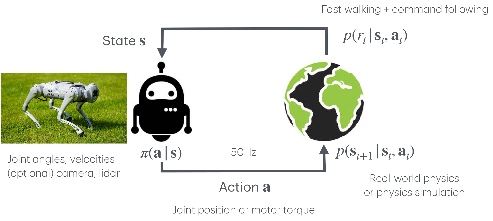
3.2 병렬 시뮬레이션 환경 (Parallel Simulation Environments)
23쪽은 수많은 환경을 동시에 돌릴 수 있는 물리 시뮬레이터 네 개의 로고를 보여 줍니다 — RaiSim, NVIDIA Isaac, MuJoCo, SAPIEN. Isaac 계열은 13회차의 Eureka에서 Isaac Gym으로, MuJoCo는 8회차의 벤치마크에서 이미 만났습니다. 원 논문에 따르면 이 연구는 Isaac Gym을, 4절의 RMA는 RaiSim을 씁니다.
3.3 관측과 행동 (Observation and Action)
24쪽은 정책의 입력과 출력을 구체적으로 적습니다.
| 관측 (Observation) | 뜻 |
|---|---|
| Command (명령) | 따라가야 할 목표 속도입니다. 3.4절 보상의 추종 항으로 보아 몸통의 목표 평면 속도 \(\mathbf{v}^*_{b,xy}\)와 목표 회전 속도 \(\boldsymbol{\omega}^*_{b,z}\)입니다 |
| Linear velocity (선속도) | 몸통의 선속도 |
| Angular velocity (각속도) | 몸통의 각속도 |
| Joint positions (관절 위치) | 고유수용감각 |
| Joint velocities (관절 속도) | 고유수용감각 |
| Previous action (직전 행동) | 바로 앞 스텝에 낸 행동 |
| Scandots (지형 스캔 점) | 로봇 주변 지형의 높이를 점으로 샘플링한 값 |
- 행동(Action): 관절 위치(Joint positions)입니다. 원 논문에 따르면 정책이 낸 목표 관절 위치를 PD 제어기가 토크로 바꿔 따라가므로, 1.7절의 관절 위치 제어와 같은 선택입니다.
- 지형 스캔 점: 원 논문에 따르면 몸통 주변 격자 위 108개 지점에서 잰 지형의 높이입니다. 슬라이드 왼쪽 아래의 작은 그림이 로봇 주변 바닥에 파란 점들이 격자로 찍힌 모습을 보여 줍니다. 카메라 영상 대신 지형의 기하만 요약한 입력이므로, 1.6절의 포인트 클라우드처럼 겉모습의 간극을 피하는 입력입니다.
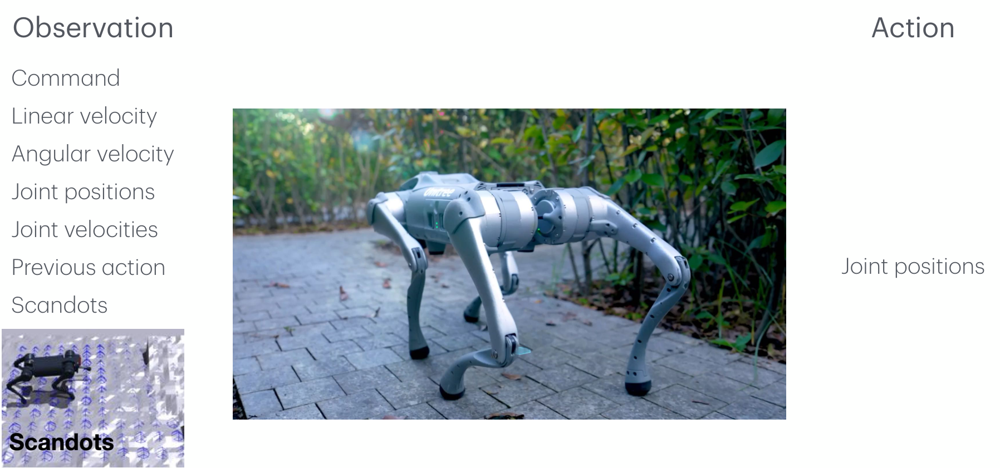
3.4 보상 함수 (Reward Function)
25쪽은 원 논문의 보상 표를 옮기고, 왼쪽의 주황 글씨로 항들을 네 묶음 — 명령 추종(Command following), 부드러운 움직임(Smooth motion), 충돌 회피(Collision avoidance), 긴 보폭(Long step) — 으로 나눕니다. 아래 첨자 \(b\)는 몸통(base) 좌표계, \(xy\)는 수평면, \(z\)는 수직축, \(j\)는 관절을 뜻합니다.
| 묶음 | 항 | 정의 | 가중치 |
|---|---|---|---|
| 명령 추종 | 선속도 추종 (Linear velocity tracking) | \(\phi(\mathbf{v}^*_{b,xy} - \mathbf{v}_{b,xy})\) | \(1\,dt\) |
| 각속도 추종 (Angular velocity tracking) | \(\phi(\boldsymbol{\omega}^*_{b,z} - \boldsymbol{\omega}_{b,z})\) | \(0.5\,dt\) | |
| 선속도 벌점 (Linear velocity penalty) | \(-\mathbf{v}_{b,z}^2\) | \(4\,dt\) | |
| 각속도 벌점 (Angular velocity penalty) | \(-\lVert \boldsymbol{\omega}_{b,xy} \rVert^2\) | \(0.05\,dt\) | |
| 부드러운 움직임 | 관절 움직임 (Joint motion) | \(-\lVert \ddot{\mathbf{q}}_j \rVert^2 - \lVert \dot{\mathbf{q}}_j \rVert^2\) | \(0.001\,dt\) |
| 관절 토크 (Joint torques) | \(-\lVert \boldsymbol{\tau}_j \rVert^2\) | \(0.00002\,dt\) | |
| 행동 변화율 (Action rate) | \(-\lVert \dot{\mathbf{q}}^*_j \rVert^2\) | \(0.25\,dt\) | |
| 충돌 회피 | 충돌 (Collisions) | \(-n_{collision}\) | \(0.001\,dt\) |
| 긴 보폭 | 발의 체공 시간 (Feet air time) | \(\sum_{f=0}^{4} (\mathbf{t}_{air,f} - 0.5)\) | \(2\,dt\) |
매 스텝의 보상은 각 항에 가중치를 곱해 더한 값입니다.
- 추종 항과 \(\phi\): 슬라이드에는 \(\phi\)의 정의가 없지만, 원 논문의 표 설명에 따르면 \(\phi(\mathbf{x}) = \exp(-\lVert \mathbf{x} \rVert^2 / 0.25)\)입니다. 목표 속도와 실제 속도의 차이가 0이면 1, 차이가 커질수록 0으로 줄어드는 종 모양의 보상이므로, 명령을 정확히 따를수록 큰 보상을 받습니다.
- 선속도·각속도 벌점: 몸통이 위아래로 튀는 속도 \(\mathbf{v}_{b,z}\)와, 앞뒤·좌우로 흔들리는 회전 속도 \(\boldsymbol{\omega}_{b,xy}\)를 벌합니다. 수평으로 미끄러지듯 안정되게 걸으라는 항입니다.
- 부드러운 움직임: 관절의 가속도와 속도, 토크를 벌해 에너지를 아끼고 급격한 움직임을 피하게 합니다. 행동 변화율의 \(\mathbf{q}^*_j\)는 3.3절의 행동, 곧 목표 관절 위치이므로 \(\dot{\mathbf{q}}^*_j\)는 행동이 스텝마다 얼마나 바뀌는지입니다(슬라이드 이미지에서는 이 점이 바로 위 행의 \(\boldsymbol{\tau}_j\) 아래로 밀려 찍혀 있습니다). 행동이 들쭉날쭉하면 실제 모터에 무리가 가고, 시뮬레이션과 실세계의 차이도 커집니다.
- 충돌: 충돌 횟수 \(n_{collision}\)만큼 벌합니다.
- 발의 체공 시간: 발 \(f\)가 공중에 머문 시간 \(\mathbf{t}_{air,f}\)가 0.5초보다 길면 양의 보상, 짧으면 음의 보상을 받아 보폭이 긴 걸음을 유도합니다. 합의 범위는 원문 표기 그대로 \(f = 0\)부터 4까지이지만, 발은 네 개이므로 네 발에 대한 합으로 읽으면 됩니다.
- 가중치의 \(dt\): 모든 가중치에 제어 주기 \(dt\)가 곱해져 있습니다. 매 스텝의 보상을 “단위 시간당 보상 × 시간 간격”으로 만들어, 에피소드 전체의 보상이 시간에 대한 적분처럼 되게 하는 것으로 볼 수 있습니다.
가중치는 항마다 단위와 크기가 달라 제각각이며, 토크의 제곱처럼 값 자체가 큰 항에는 0.00002 같은 아주 작은 가중치가 붙습니다. 걷는 행동을 처음부터 강화학습으로 배우려면 이처럼 여러 항을 손으로 설계해야 하는데, 5절의 파쿠르가 “단순한 보상으로도 된다”는 정리로 끝나는 것과 대비됩니다.
3.5 무작위 지형 생성 (Random Terrain Generation)
26쪽은 학습에 쓰는 지형들입니다. 울퉁불퉁한 평지, 표면이 거친 경사면, 피라미드 모양의 계단, 크기가 제각각인 블록이 흩어진 지형 위에서 빨간 사족 보행 로봇들이 동시에 걷습니다.
- 지형을 무작위로 생성하는 것은 지형에 대한 도메인 무작위화입니다. 정책이 한 가지 바닥에 과적합하지 않고, 실세계에서 만날 다양한 바닥에 대비하게 합니다.
- 원 논문은 로봇의 성과에 따라 지형의 난이도를 조절하는 “게임에서 영감을 얻은(game-inspired)” 커리큘럼으로, 잘 걷는 로봇일수록 더 어려운 지형에서 학습하게 합니다.
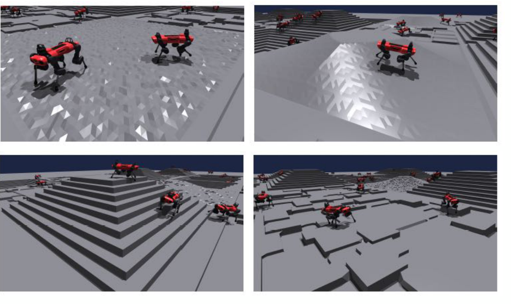
3.6 병렬 환경 위의 PPO (PPO on Parallel Environments)
27쪽이 제목의 “몇 분 만에”를 가능하게 하는 구조입니다. 주황 상자 안의 흐름은 다음과 같습니다.
- \(N\)개의 병렬 환경(\(N\) parallel environments): 수많은 로봇이 지형 위에서 동시에 걷습니다.
- \(N\)개의 관측(\(N\) observations): 모든 로봇의 관측을 한 행씩 쌓아 하나의 행렬로 만듭니다.
- “한 번”의 순전파(“One” feed-forward pass): 정책 \(\pi(\mathbf{a} \mid \mathbf{s})\)가 그 행렬을 한 번에 처리합니다(슬라이드에는 feed-foward로 적혀 있습니다).
- \(N\)개의 행동(\(N\) actions): 모든 로봇의 행동이 한 번에 나옵니다.
주황 글씨 “Single GPU!”(GPU 한 장으로!) 옆에 한 번의 정책 갱신에 쓰는 데이터의 양이 적혀 있습니다.
\[ \underbrace{4{,}096}_{\text{병렬 환경 } N} \times \underbrace{24}_{\text{환경당 스텝 } T} = \underbrace{98{,}304}_{\text{배치 크기 } B} \text{ 스텝} \]
5회차 14.1절에서 본 PPO의 병렬화가 극단까지 간 모습입니다. 31쪽의 정리대로 시뮬레이션, 추론, 학습이 모두 GPU 위에서 일어나므로 CPU와 GPU 사이를 오가는 느린 데이터 전송이 없고, 수천 개의 환경을 한 묶음으로 시뮬레이션하고 한 묶음으로 추론합니다.
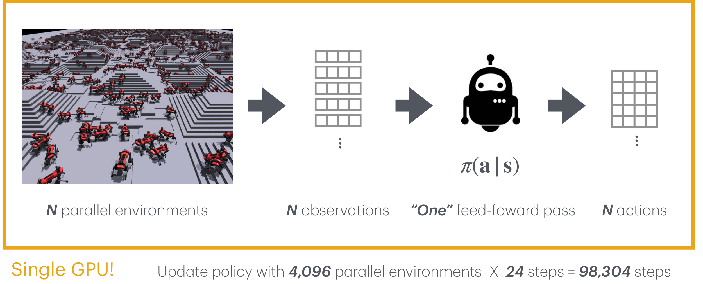
3.7 큰 배치가 성능을 높인다 (Large Batch Size Improves Performance)
28쪽은 병렬 환경의 수(로봇 수, 가로축)와 배치 크기(곡선의 색)에 따라 학습이 끝났을 때의 보상(Final reward, 세로축)이 어떻게 달라지는지를 보여 줍니다. 그래프 눈금에서 읽은 근삿값은 다음과 같습니다.
| 배치 크기 \(B\) | 최고점 | 로봇 16,384대에서 |
|---|---|---|
| 49,152 (파랑) | 로봇 512대에서 약 10.2 | 약 0.2 |
| 98,304 (주황) | 로봇 512–2,048대에서 약 15 | 약 2.4 |
| 196,608 (초록) | 로봇 2,048대에서 약 17 | 약 13.6 |
빨간 파선 “Baseline upper bound”(기준선의 상한)는 약 19입니다. 원 논문의 그림 설명에 따르면 빨간 선은 로봇 2만 대로 100만 샘플의 배치를 쓰는 이상적인 경우입니다.
두 가지 경향이 읽힙니다.
- 배치가 클수록 높다: 같은 로봇 수에서 초록(196,608)이 늘 가장 높고 파랑(49,152)이 가장 낮습니다. 한 번의 갱신에 쓰는 데이터가 많을수록 정책 경사의 추정이 정확해지고 학습이 안정됩니다.
- 배치를 고정하고 로봇만 늘리면 무너진다: 세 곡선 모두 어느 지점을 넘으면 떨어지며, 배치가 작을수록 일찍, 크게 떨어집니다. 이유는 3.6절의 식 \(B = N \times T\)에 있습니다. 배치 \(B\)를 고정한 채 로봇 수 \(N\)을 늘리면 로봇 한 대가 모으는 스텝 수 \(T = B / N\)이 줄어듭니다. 예를 들어 \(B = 49{,}152\)에서 로봇 16,384대이면 \(T = 3\), 곧 로봇마다 3스텝짜리 조각만 모읍니다. 이렇게 짧은 조각으로는 걸음의 결과가 드러나기 전에 궤적이 끊기므로, 이득을 추정할 때 실제 보상보다 가치 함수의 부트스트랩에 거의 전적으로 기대게 되어 학습이 나빠진다고 볼 수 있습니다.
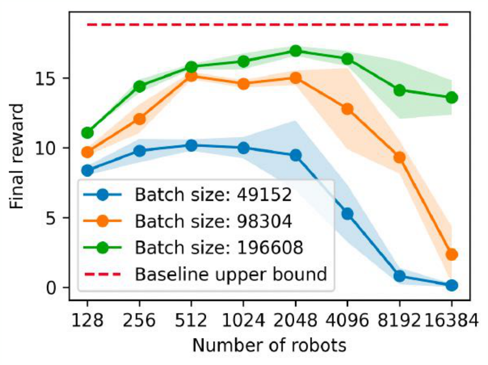
3.8 대규모 병렬화가 학습 시간을 줄인다 (Massive Parallelization Reduces Training Time)
29쪽은 같은 실험의 총 학습 시간(Total training time, 로그 눈금)입니다. 색은 28쪽과 같습니다. 눈금에서 읽은 근삿값은 다음과 같습니다.
| 로봇 수 | 128 | 512 | 2,048 | 4,096 | 16,384 |
|---|---|---|---|---|---|
| 49,152 (파랑) | 약 2.9시간 | 약 37분 | 약 13분 | 약 9분 | 약 8분 |
| 98,304 (주황) | 약 4시간 | 약 1.2시간 | 약 25분 | 약 18분 | 약 13분 |
| 196,608 (초록) | 약 8시간 | 약 2.4시간 | 약 50분 | 약 36분 | 약 24분 |
빨간 파선은 약 1.6시간으로, 28쪽과 같은 이상적인 경우(로봇 2만 대, 배치 100만 샘플)의 학습 시간입니다.
- 로봇을 늘릴수록 학습 시간이 크게 줄어듭니다. 같은 양의 데이터를 더 많은 로봇이 나눠 모으므로, 데이터를 모으는 데 드는 실제 시간이 줄기 때문입니다.
- 27쪽의 설정(로봇 4,096대, 배치 98,304)은 약 18분입니다. 제목의 “몇 분 만에”가 가리키는 지점입니다.
- 28쪽과 함께 읽으면 맞교환이 보입니다. 로봇을 늘리면 빨라지지만 배치를 고정하면 성능이 떨어지고, 배치를 키우면 성능이 오르지만 느려지고 메모리를 더 씁니다. 31쪽의 정리 “trade-off with memory and speed”(메모리·속도와의 맞교환)가 이것입니다.
30쪽은 그렇게 배운 정책을 실제 로봇에서 시험하는 영상 장면입니다.
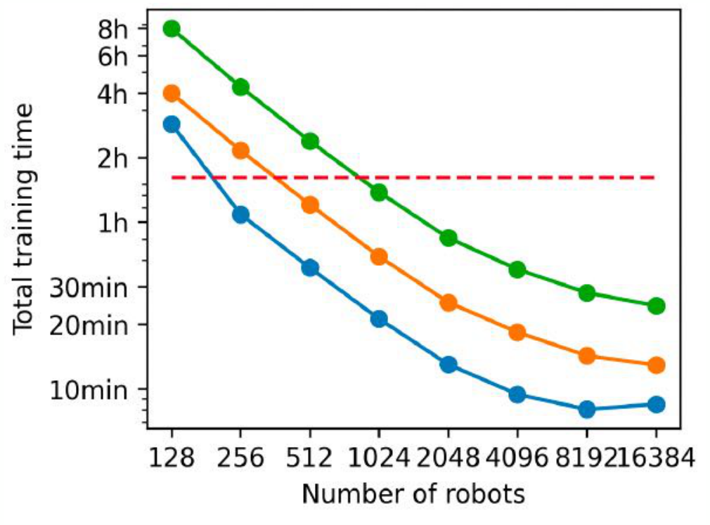
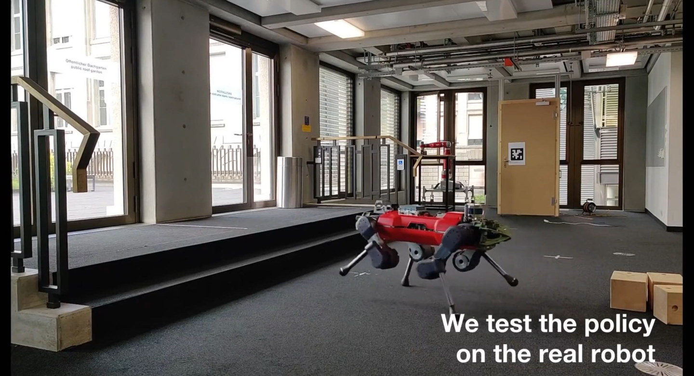
3.9 핵심 정리 — 몇 분 만에 걷기 (Key Takeaways)
- 시뮬레이션, 추론, 학습을 모두 GPU에서 돌리면 학습이 빨라집니다 (Running simulation, inference, and training in GPU accelerates learning) — 느린 데이터 전송이 없고 (No slow data transfer), 시뮬레이션과 추론을 묶음으로 합니다 (Batch simulation and batch inference).
- 대규모 병렬화로 얻은 큰 배치는 PPO 학습을 안정시키지만, 메모리·속도와 맞교환됩니다 (Large batch size with massive parallelization leads to stable PPO training, but trade-off with memory and speed).
- 도메인 무작위화를 쓰면 시뮬레이션에서 배운 보행 정책이 실세계로 전이됩니다! (With domain randomization, locomotion policy trained in simulation transfers to the real world!)
슬라이드는 도메인 무작위화의 내용을 따로 적지 않습니다. 원 논문에 따르면 지면의 마찰 계수를 \([0.5, 1.25]\)에서 무작위로 뽑고, 10초마다 몸통을 수평 방향으로 최대 1m/s의 속도가 되도록 밀며, 관측에는 실제 로봇의 데이터에 맞춘 잡음을 더합니다. 3.5절의 무작위 지형과 함께, 실세계에서 마주칠 변화를 시뮬레이션 안에서 미리 겪게 하는 장치들입니다.
4. RMA: 다리 로봇을 위한 빠른 운동 적응 (RMA: Rapid Motor Adaptation for Legged Robots)
32쪽은 논문의 제목과 저자 — Ashish Kumar(UC Berkeley), Zipeng Fu(Carnegie Mellon University), Deepak Pathak(Carnegie Mellon University), Jitendra Malik(UC Berkeley, Facebook) — 아래에, 검은 사족 보행 로봇이 실세계의 여러 바닥을 걷는 사진들을 모아 보여 줍니다. 출처는 RSS 2021입니다.
3절의 정책은 지형의 높이는 스캔 점으로 보고 반응하지만, 마찰이나 밀림처럼 보이지 않는 조건은 도메인 무작위화로 두루 견디는 하나의 정책으로 다룹니다. RMA는 한 걸음 더 나아가, 보이지 않는 조건까지 지금 어떤 상태인지를 실시간으로 알아내고 그에 맞춰 걷습니다.
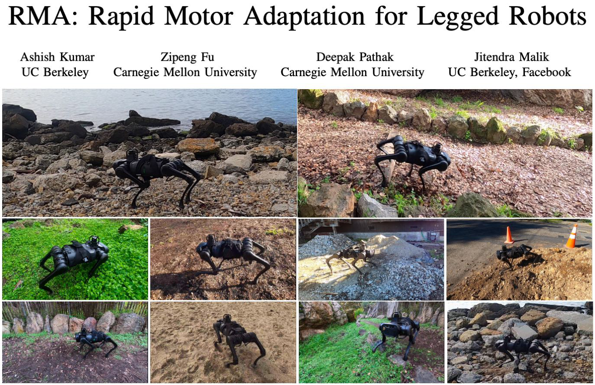
4.1 문제 정식화: 보지 않고 걷기 (Problem Formulation (Blind Walking))
33쪽은 22쪽의 그림을 그대로 쓰되 두 곳을 바꿉니다.
- 상태: 관절 각도와 직전 행동(Joint angle, previous action)뿐입니다. 카메라도 라이다도, 3.3절의 지형 스캔 점도 없습니다. 제목의 “보지 않고 걷기(blind walking)”가 이 뜻입니다.
- 제어 주파수: 50Hz에서 100Hz로 올라갑니다.
행동(관절 위치 또는 모터 토크), 보상(빠르게 걷기와 명령 추종), 전이(실세계의 물리 또는 물리 시뮬레이션)는 22쪽과 같습니다. 바닥을 볼 수 없으므로, 지금 밟은 바닥이 어떤지는 몸이 느끼는 것, 곧 관절의 움직임에서 알아내야 합니다.
4.2 빠른 운동 적응 (Rapid Motor Adaptation (RMA))
34–36쪽은 RMA를 세 단계로 쌓아 올립니다.
1단계: 시뮬레이션에서 정책 학습하기
34쪽(“1. Learning a policy in simulation”)의 구조는 두 갈래입니다.
- 상태와 행동 \((\mathbf{s}_t, \mathbf{a}_{t-1})\): 로봇의 관절 상태와 직전 행동, 곧 “로봇이 어떻게 움직이고 있는가(how it’s moving)”가 정책으로 들어갑니다.
- 환경 요인 \(\mathbf{e}_t\)(Env Factor): 질량, 마찰, 지형 등(Mass, Friction, Terrain, etc)입니다. 환경 요인 인코더(Env Factor Encoder)가 이를 잠재 벡터 \(\mathbf{z}_t\)로 압축해 정책에 넣습니다.
원 논문의 기호로 적으면 다음과 같습니다.
\[ \mathbf{z}_t = \mu(\mathbf{e}_t), \qquad \mathbf{a}_t = \pi(\mathbf{s}_t, \mathbf{a}_{t-1}, \mathbf{z}_t) \]
원 논문에 따르면 \(\mathbf{e}_t\)는 17차원 — 몸체의 질량과 질량 중심의 위치(3), 모터의 세기(12), 마찰(1), 국소 지형의 높이(1) — 이고, \(\mathbf{z}_t\)는 8차원이며, 인코더 \(\mu\)와 정책 \(\pi\)를 PPO로 함께 학습합니다. 시뮬레이션에서는 이 값들을 무작위로 바꾸어 가며(도메인 무작위화) 학습하므로, 정책은 \(\mathbf{z}_t\)를 보고 그 환경에 맞는 걸음새를 고르는 법을 배웁니다.
문제는 빨간 글씨가 짚습니다.
Env Factor is not available in the real world! (환경 요인은 실세계에서 얻을 수 없다!)
질량이나 마찰은 시뮬레이터가 정해 준 값이라 시뮬레이션에서는 알지만, 실세계에서는 잴 수 없습니다. 1.4절의 특권 정보와 같은 처지입니다.
2단계: 환경 요인을 예측하도록 학습하기
35쪽은 주황 글씨의 둘째 단계(“2. Learning to predict Env Factor”)를 더하고, 환경 요인 상자를 빨갛게 강조합니다.
- 상태·행동의 이력(History of \((\mathbf{s}, \mathbf{a})\)): 최근 50스텝 = 0.5초의 상태와 행동입니다(100Hz이므로 50스텝이 0.5초).
- 적응 모듈(Adaptation Module): 이 이력에서 \(\hat{\mathbf{z}}_t\)를 추정합니다.
- 재구성 손실 최소화(Minimize reconstruction loss): 추정한 \(\hat{\mathbf{z}}_t\)가 1단계의 \(\mathbf{z}_t\)와 같아지도록 학습합니다.
식으로 적으면 다음과 같습니다(\(k\)는 이력의 길이).
\[ \hat{\mathbf{z}}_t = \phi(\mathbf{s}_{t-k:t-1},\, \mathbf{a}_{t-k:t-1}), \quad k = 50, \qquad \mathcal{L} = \big\lVert \hat{\mathbf{z}}_t - \mathbf{z}_t \big\rVert^2 \]
- 적응 모듈의 표적은 17차원의 \(\mathbf{e}_t\)가 아니라 8차원의 \(\mathbf{z}_t\)입니다. 그림에서도 주황 양방향 화살표가 \(\mathbf{z}_t\)와 \(\hat{\mathbf{z}}_t\) 사이에 있습니다. 환경 요인 전부를 맞힐 필요 없이, 정책이 걸음새를 고르는 데 쓰는 정보만 되찾으면 되는 셈입니다.
- 원 논문에 따르면 이 학습은 지도학습(평균 제곱 오차)이고, 데이터는 기반 정책이 추정값 \(\hat{\mathbf{z}}_t\)를 받아 움직이며 모은 것입니다. 1단계의 \(\mathbf{z}_t\)가 시뮬레이션 안에서는 언제든 계산되므로, 정답이 붙은 데이터를 얼마든지 만들 수 있습니다.
3단계: 실세계에 배치하기
36쪽(“3. Real-world deployment”)에서는 환경 요인과 인코더가 흐리게 지워집니다. 실세계에서는 적응 모듈의 \(\hat{\mathbf{z}}_t\)가 \(\mathbf{z}_t\)의 자리를 대신합니다.
\[ \mathbf{a}_t = \pi(\mathbf{s}_t, \mathbf{a}_{t-1}, \hat{\mathbf{z}}_t) \]
초록 글씨가 얻는 것 두 가지를 적습니다.
- 지형에 특화된 정책을 배운다(learn terrain-specific policy): 정책은 \(\hat{\mathbf{z}}_t\)에 따라 걸음새를 바꿉니다. 하나의 평균적인 걸음새가 아니라 지형마다 맞춘 걸음새입니다.
- 지형을 실시간으로 이해한다(understand terrain real time): 적응 모듈이 최근 0.5초의 움직임에서 지금의 바닥을 계속 다시 추정합니다.
원 논문에 따르면 기반 정책은 100Hz, 적응 모듈은 10Hz로 비동기적으로 돌고, 로봇은 Unitree A1, 시뮬레이터는 RaiSim이며, 실세계에서 아무런 수정이나 미세 조정 없이 배치됩니다. 37쪽은 그 시험 장소 가운데 하나인 “Rocky area next to river bed”(강바닥 옆의 바위 지대)의 영상 장면입니다.
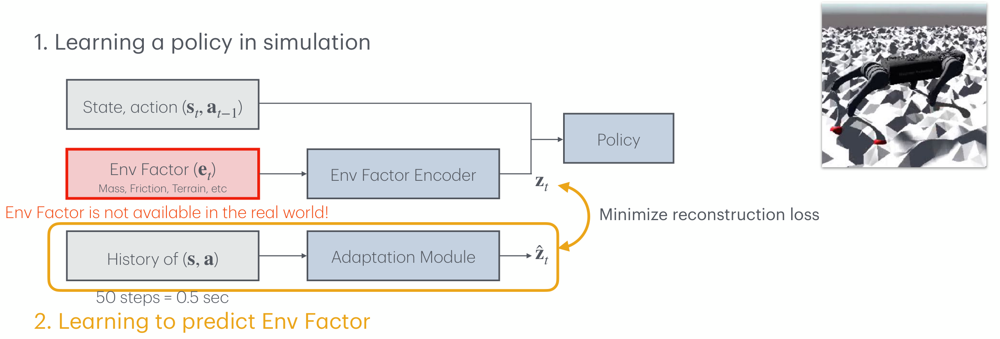
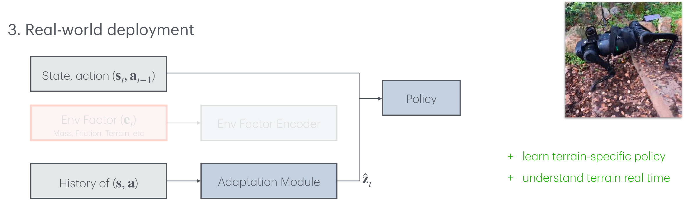
같은 관절 명령을 내려도 바닥이 미끄러우면 발이 밀리고, 무르면 다리가 더 깊이 내려가며, 몸이 무거우면 관절이 더 느리게 따라갑니다. 곧 명령(행동)과 그 결과(상태 변화)의 관계에 환경의 동역학이 새겨져 있습니다. 최근 50스텝의 \((\mathbf{s}, \mathbf{a})\)를 보면 그 관계를 읽을 수 있고, 적응 모듈은 그것을 \(\hat{\mathbf{z}}_t\)로 바꾸는 법을 배웁니다.
이렇게 보면 RMA는 18회차 5절의 시스템 식별을 실세계에서 실시간으로, 그것도 정확한 물리 매개변수 대신 정책에 필요한 잠재 벡터로 하는 방법입니다. 18회차 5절이 짚었듯 정확한 물리 매개변수를 찾는 일은 오래된 난제이지만, 정책이 쓸 8차원 요약만 맞히면 되도록 문제를 줄인 것이 이 방법의 요점입니다.
4.3 핵심 정리 — RMA (Key Takeaways)
- 로봇이 실세계에 실시간으로 적응할 수 있습니다 (Robot can adapt to the real world in real time).
- 실시간의 빠른 적응 덕분에 시각 없이도 매우 안정적으로 걷습니다 (Real-time rapid adaptation allows extreme stability even without vision).
- 빠른 적응은 도메인 무작위화 덕분에 처음 보는 다양한 환경에도 강건합니다 (Rapid adaptation is robust to diverse, unseen environments thanks to domain randomization).
셋째 줄이 중요합니다. 적응 모듈이 처음 보는 바닥에서도 쓸 만한 \(\hat{\mathbf{z}}_t\)를 내는 것은, 시뮬레이션에서 환경 요인을 넓게 무작위화해 두었기 때문입니다. RMA는 도메인 무작위화를 대체하는 것이 아니라 그 위에 “지금 어떤 환경인가”를 추정하는 층을 얹은 것입니다.
5. 로봇 파쿠르 학습 (Robot Parkour Learning)
39쪽은 논문의 표지입니다. 저자는 Ziwen Zhuang, Zipeng Fu(두 사람이 공동 책임자), Jianren Wang, Christopher Atkeson, Sören Schwertfeger, Chelsea Finn, Hang Zhao이고, 소속은 Shanghai Qi Zhi, Stanford, ShanghaiTech, CMU, Tsinghua이며, 프로젝트 페이지는 robot-parkour.github.io입니다. 출처는 CoRL 2023입니다.
4절까지는 평평하든 울퉁불퉁하든 바닥을 걷는 문제였습니다. 이번에는 상자에 기어오르고, 틈을 뛰어넘고, 낮은 장애물 밑을 기어가고, 좁은 틈을 몸을 기울여 빠져나가는 파쿠르(parkour)입니다. 장애물을 미리 보아야 하므로, 시각(깊이 영상)이 다시 입력으로 들어옵니다.
5.1 로봇 파쿠르 (Robot Parkour)
40쪽은 실세계에서 찍은 파쿠르 장면 여섯 장입니다.
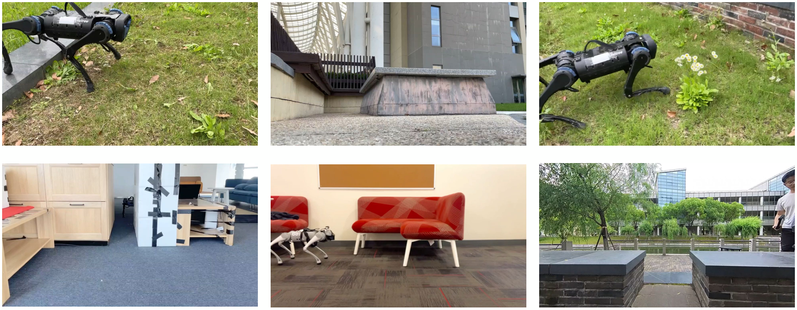
5.2 관측 (Observation)
41쪽은 파쿠르 정책의 관측입니다. 위쪽 그림이 깊이 영상의 시뮬레이션-실세계 간극을 어떻게 메우는지 보여 줍니다.
- 시뮬레이션 쪽(왼쪽에서 가운데로): 시뮬레이션 장면(Simulation) → 일정 거리 밖을 잘라 낸 깊이(Depth Clip) → 가우시안 잡음과 무작위 결함을 더한 최종 깊이(final processed depth in simulation: Gaussian Noise + Random Artifacts).
- 실세계 쪽(오른쪽에서 가운데로): 실세계 장면(Real World) → 센서가 낸 날것의 깊이(Raw Depth) → 거리를 잘라 낸 깊이(Depth Clip) → 구멍 메우기와 공간·시간 필터를 거친 최종 깊이(final processed depth in real world: Hole-filling + Spatial + Temporal filter).
주황 상자가 묶은 가운데의 두 영상이 거의 똑같아 보이는 것이 요점입니다. 시뮬레이션의 깨끗한 깊이는 일부러 더럽히고, 실세계의 지저분한 깊이는 다듬어서, 두 입력이 가운데에서 만나게 합니다. 1.6절의 포인트 클라우드 정규화가 인코더의 특징을 맞췄다면, 여기서는 입력 자체를 전처리로 맞춥니다.
그 밖의 관측은 선속도, 각속도, 관절 위치, 관절 속도, 직전 행동입니다. 오른쪽 문장이 중요한 단서를 답니다.
Environment info only during pre-training (e.g., type of obstacle, distance to the obstacle) (환경 정보는 사전학습 동안에만 쓴다. 예: 장애물의 종류, 장애물까지의 거리)
장애물의 종류나 거리 같은 환경 정보는 시뮬레이션에서만 알 수 있는 특권 정보입니다. 원 논문에 따르면 1·2단계의 스킬 정책(오라클)이 이 정보를 보고 배우므로, 슬라이드의 “pre-training”(사전학습)은 증류 이전의 두 단계를 함께 가리키는 것으로 읽힙니다. 3단계에서는 특권 정보 없이 깊이 영상과 고유수용감각만 보는 정책으로 증류됩니다(5.6절).
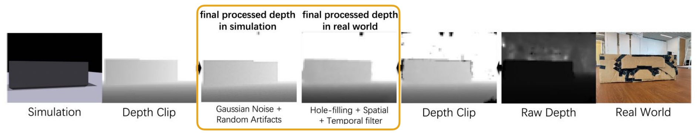
5.3 1단계: 소프트 동역학으로 강화학습 사전학습 (Stage 1: RL Pre-Training with Soft Dynamics)
42–44쪽은 첫 단계입니다. 파쿠르를 처음부터 진짜 장애물로 배우면 탐색이 막힙니다. 무작위로 움직이는 초기의 정책은 높은 상자 앞에서 부딪히고 멈출 뿐, 기어올라 넘어가는 경험을 거의 하지 못하기 때문입니다. 그래서 1단계에서는 장애물을 통과할 수 있게 만듭니다.
- 소프트 동역학 제약(Soft Dynamics Constraints): 42쪽 윗줄에서 기어오르기·기어가기·기울이기의 장애물은 파란 선의 뼈대로만 그려져 로봇이 그 안으로 파고들 수 있고, 뛰어넘기에서는 어두운 구덩이 위에 가는 하늘색 선의 테두리가 그려져 있습니다. 원 논문은 이를 “장애물을 관통할 수 있다(the obstacles are penetrable)”고 적습니다.
- 하드 동역학 제약(Hard Dynamics Constraints): 아랫줄처럼 장애물이 실제로 단단한 물체입니다.
네 스킬 — 기어오르기(Climb), 뛰어넘기(Leap), 기어가기(Crawl), 기울이기(Tilt) — 모두 두 가지 장면이 있습니다. 보상은 슬라이드 아래에 적혀 있습니다.
Reward = moving forward + smooth action (energy) + alive (보상 = 앞으로 나아가기 + 부드러운 행동(에너지) + 살아 있기) + soft constraints penalty (+ 소프트 제약 벌점)
앞의 세 항은 3.4절보다 훨씬 단순한 기본 보상이고, 주황으로 강조된 마지막 항이 장애물을 관통한 만큼 주는 벌점입니다. 관통은 허용하되 벌을 주므로, 로봇은 처음에는 장애물을 뚫고 지나가며 앞으로 나아가는 법을 배우고, 점점 관통을 줄이는 쪽, 곧 장애물을 실제로 넘는 동작 쪽으로 옮겨 갑니다.
원 논문의 관통 벌점은 다음과 같습니다.
\[ r_{penetrate} = -\sum_{p} \big( \alpha_5\, \mathbf{1}[p] + \alpha_6\, d(p) \big)\, v_x \]
- \(p\): 로봇 몸에서 충돌을 검사하는 점들이고, \(\mathbf{1}[p]\)는 점 \(p\)가 장애물 안으로 들어갔는지를, \(d(p)\)는 관통한 면까지의 거리를 나타냅니다. \(\alpha_5, \alpha_6\)은 고정된 상수입니다.
- \(v_x\): 앞으로 나아가는 속도입니다. 벌점에 속도를 곱하면 벌점의 합이 “관통한 채로 나아간 거리”에 비례하게 되므로, 장애물을 빠르게 뚫고 지나가 관통 시간을 줄이는 식으로 벌점을 피할 수 없습니다.
장애물의 난이도는 자동 커리큘럼으로 조절합니다. 난이도 점수 \(s \in [0, 1]\)을 두고, 관통 보상이 문턱보다 높으면(관통이 적으면) \(s\)를 0.05 올리고 아니면 낮추며, 장애물의 성질을 쉬운 값과 어려운 값 사이에서 \(l = (1 - s)\, l_{easy} + s\, l_{hard}\)로 정합니다. 1·2단계 모두 PPO로 학습합니다.
43쪽은 1단계 학습의 영상 장면(“Training Iteration 0”, 학습 반복 0)으로, 기어오르기·기어가기·기울이기의 장애물은 파란 선의 뼈대로, 뛰어넘기의 구덩이는 어두운 면에 하늘색 테두리로 그려져 있습니다. 세 칸에서는 로봇이 오른쪽 끝에서 다가오고, 기울이기 칸에서는 이미 두 벽 사이에 서 있는 학습 초기의 모습입니다. 44쪽은 그 효과를 그래프로 보여 줍니다. 가로축은 학습 진행(Training Progress, 0–1), 세로축은 성공률(Success Rate)이고, 눈금에서 읽은 근삿값은 다음과 같습니다.
- 소프트 동역학을 쓴 오라클(Oracles w/ Soft Dyn, Ours): 학습 초반부터 오르기 시작해, 빨간 파선의 “RL fine-tuning starts for Ours”(우리 방법의 강화학습 미세 조정 시작) 지점(학습 진행 약 0.73)에서 약 0.74, 끝에서 약 0.94입니다.
- 소프트 동역학 없이 배운 오라클(Oracles w/o Soft Dyn): 학습 진행 0.4 무렵까지 0에 머물다가 끝에서 약 0.44입니다.
- RND: 끝에서 약 0.25입니다.
여기서 오라클(oracle)은 원 논문의 용어로, 시뮬레이션의 특권 정보를 보고 스킬 하나씩을 따로 배운 정책입니다. RND는 15회차에 이름만 나왔던 비지도 탐색 방법으로, 원 논문에 따르면 예측 오차를 보너스 보상으로 주어 탐색을 장려하되 소프트 동역학 사전학습은 쓰지 않은 비교 방법입니다. 탐색 보너스보다 “장애물을 잠시 뚫어도 되게 하는” 커리큘럼이 훨씬 효과적이라는 결과입니다.
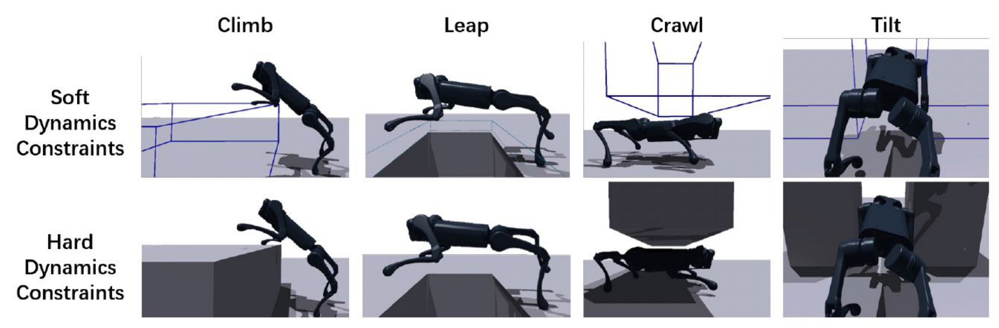
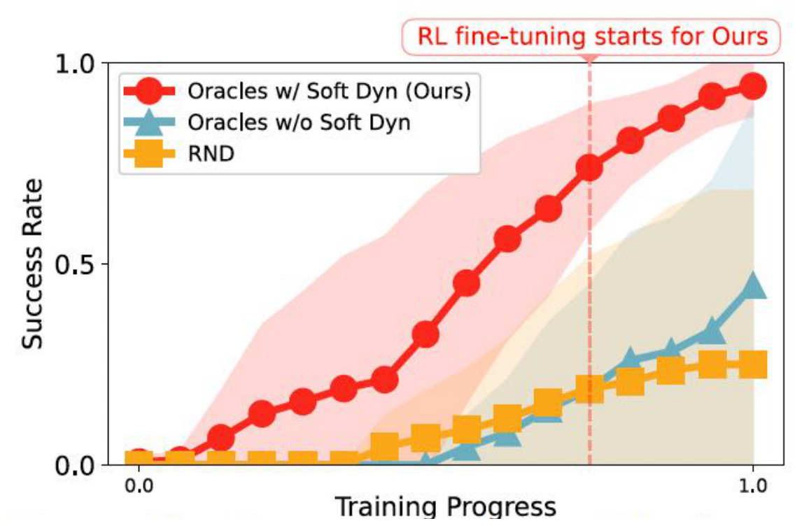
5.4 2단계: 하드 동역학으로 강화학습 미세 조정 (Stage 2: RL Fine-Tuning with Hard Dynamics)
45쪽은 둘째 단계의 영상 장면(“Before RL Fine-tuning with Hard Dynamics Constraints”, 하드 동역학 제약으로 미세 조정하기 전)입니다. 이제 장애물은 단단한 물체입니다. 1단계에서 관통을 줄이며 배운 정책을 진짜 장애물에서 PPO로 미세 조정하면, 관통으로 얼버무리던 부분까지 실제로 넘는 동작이 완성됩니다. 44쪽 그래프에서 빨간 파선 뒤의 구간이 이 단계입니다.
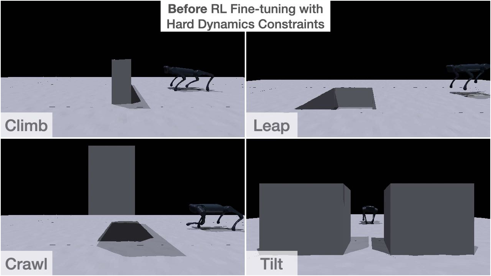
5.5 스킬 성능 (Skill Performance)
46쪽은 다섯 스킬의 성공률과 평균 이동 거리를 한 표에 담은 슬라이드로, 여기서는 두 표로 나누어 옮깁니다. 표의 Ours (parkour policy)는 5.6절의 3단계에서 증류한 최종 정책이고, 굵은 값은 슬라이드에서 굵게 표시된 값, 곧 오라클을 뺀 방법 가운데 가장 좋은 값입니다.
성공률 (Success Rate, %, 높을수록 좋음)
| 방법 | 기어오르기 | 뛰어넘기 | 기어가기 | 기울이기 | 달리기 |
|---|---|---|---|---|---|
| Blind | 0 | 0 | 13 | 0 | 100 |
| MLP | 0 | 1 | 63 | 43 | 100 |
| No Distill | 0 | 0 | 73 | 0 | 100 |
| RMA [8] | – | – | – | 74 | – |
| Ours (parkour policy) | 86 | 80 | 100 | 73 | 100 |
| Oracles w/o Soft Dyn | 0 | 0 | 93 | 86 | 100 |
| Oracles | 95 | 82 | 100 | 100 | 100 |
평균 거리 (Average Distance, m, 높을수록 좋음)
| 방법 | 기어오르기 | 뛰어넘기 | 기어가기 | 기울이기 | 달리기 |
|---|---|---|---|---|---|
| Blind | 1.53 | 1.86 | 2.01 | 1.62 | 3.6 |
| MLP | 1.59 | 1.74 | 3.27 | 2.31 | 3.6 |
| No Distill | 1.57 | 1.75 | 2.76 | 1.86 | 3.6 |
| RMA [8] | – | – | – | 2.7 | – |
| Ours (parkour policy) | 2.37 | 3.05 | 3.6 | 2.68 | 3.6 |
| Oracles w/o Soft Dyn | 1.54 | 1.73 | 3.58 | 1.73 | 3.6 |
| Oracles | 3.60 | 3.59 | 3.6 | 2.78 | 3.6 |
원 논문에 따르면 평균 거리의 최댓값은 3.6m이고, 결과는 100번의 시행과 3개의 시드에 대한 평균입니다. 표의 [8]은 원 논문의 참고문헌 번호입니다. 비교 방법의 뜻(원 논문 4절)과 읽을거리는 다음과 같습니다.
- Blind: 깊이 영상을 0으로 지운 정책입니다. 기어오르기·뛰어넘기·기울이기가 모두 0%로, 장애물을 보지 않고는 파쿠르를 할 수 없습니다. 장애물이 없는 달리기만 100%입니다.
- MLP: 기억(순환 구조) 없이 깊이 영상, 고유수용감각, 직전 행동만 보는 정책입니다. 기어오르기·뛰어넘기가 0–1%입니다. 로봇이 장애물에 바짝 다가가면 카메라에서 장애물이 사라지므로, 앞서 본 것을 기억해야 넘을 수 있다고 볼 수 있습니다.
- No Distill: 증류 없이 깊이 영상을 보는 순환 신경망(GRU) 정책을 처음부터 PPO로 배운 것입니다. 기어오르기·뛰어넘기·기울이기가 0%로, 특권 정보의 교사 없이 시각 정책을 바로 강화학습하기는 어렵습니다.
- RMA: 4절의 방법처럼 행동 대신 환경의 잠재 표현을 증류한 비교 방법으로, 기울이기에서만 보고되었고 74%로 우리 방법(73%)과 비슷합니다.
- Oracles w/o Soft Dyn과 Oracles: 특권 정보를 보는 스킬별 정책이 소프트 동역학 없이는 기어오르기·뛰어넘기에서 0%, 있으면 95%·82%입니다. 5.3절의 사전학습이 어려운 스킬의 성패를 가릅니다.
특권 정보 없이 깊이 영상과 고유수용감각만 보는 최종 정책(Ours)은 기어오르기 86%, 뛰어넘기 80%로 특권 정보를 보는 오라클(95%, 82%)에 근접합니다.
5.6 3단계: 증류로 단일 정책 학습 (Stage 3: Learning Single Policy via Distillation)
47쪽은 마지막 단계입니다. 스킬마다 따로 배운 다섯 정책 — climb(기어오르기), leap(뛰어넘기), crawl(기어가기), tilt(기울이기), run(달리기) — 이 깔때기 모양으로 모여 하나의 파쿠르 정책(Parkour Policy)이 됩니다. 이 가운데 장애물이 있는 네 스킬은 5.3–5.4절의 두 단계로 배운 오라클입니다. 파쿠르 정책은 시각과 고유수용감각(vision + proprio)을 받아 행동(action)을 냅니다.
- 원 논문에 따르면 증류는 1회차 5.1절의 DAgger로 합니다. 학생인 파쿠르 정책이 직접 움직이며 상태를 방문하고, 그 상태에서 해당 장애물의 스킬 정책(교사)이 낼 행동을 정답으로 붙여 배웁니다.
- 학생 정책은 순환 신경망(GRU)이고, 입력은 고유수용감각, 직전 행동, 작은 합성곱 신경망으로 압축한 깊이 영상의 잠재 표현입니다.
- 교사들은 5.2절의 특권 정보(장애물의 종류, 거리)를 보지만 학생은 깊이 영상과 고유수용감각만 봅니다. 학생은 “어떤 장애물 앞에서 어떤 스킬을 쓸지”까지 깊이 영상에서 스스로 알아내야 합니다. 1.4–1.8절의 교사–학생 증류와 같은 구조를, 여러 교사를 하나의 학생으로 모으는 데 쓴 것입니다.
48쪽은 같은 논문의 영상 장면으로, 로봇 앞머리의 깊이 카메라를 가까이서 찍은 화면입니다. 49쪽은 다른 연구 Cheng and Shi et al., Extreme Parkour with Legged Robots, ICRA 2024의 영상 장면으로, 검은 사족 보행 로봇이 사무실 안에 늘어놓은 커다란 나무 상자들 위를 달리고 있습니다.
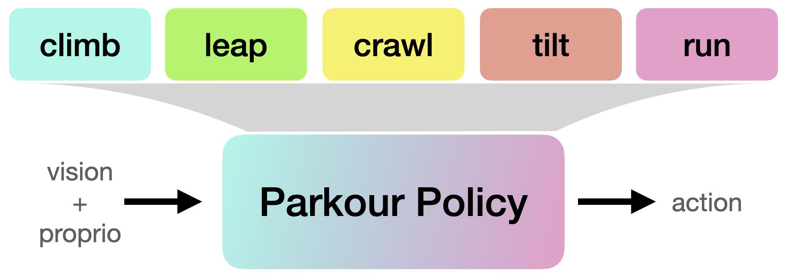
5.7 핵심 정리 — 로봇 파쿠르 (Key Takeaways)
50쪽의 하단 출처 표기는 RMA로 적혀 있지만, 내용은 이 절의 정리입니다.
- 사족 보행 로봇이 시각(깊이)을 보며 걸을 수 있습니다! (Quadruped can walk with vision (depth)!)
- 정교한 커리큘럼이 로봇에게 어려운 스킬을 가르칩니다 (Sophisticated curriculum helps robots learn challenging skills) — 소프트 동역학 제약 (Soft dynamics constraints), 자동 커리큘럼(난이도를 천천히 높이기) (Automatic curriculum (slowly increasing difficulty)).
- 사족 보행에는 단순한 보상 설계로도 충분합니다 (Simple reward formulation works for quadruped).
첫째 줄은 5.2절의 깊이 전처리와 5.6절의 증류가, 둘째 줄은 5.3–5.4절의 2단계 강화학습과 커리큘럼이 이룬 결과입니다. 셋째 줄은 5.3절의 보상(“앞으로 나아가기 + 부드러운 행동 + 살아 있기 + 관통 벌점”)이 3.4절의 아홉 항짜리 보상보다 훨씬 단순하다는 점을 가리킵니다. 어려운 스킬을 가르친 것은 보상의 정교함이 아니라 커리큘럼이었습니다.
6. 시뮬레이션-실세계 전이 (Simulation-to-Real Transfer)
51쪽은 데크 전체의 결론으로, 18회차 12절에서 본 13-1 데크의 마지막 31쪽과 같은 슬라이드입니다.
- 시뮬레이션은 강화학습으로 로봇 정책을 배우는 안전하고 값싼 길을 제공합니다 (Simulation can provide a safe, cheap way to learn a robot policy using RL).
- 시뮬레이션-실세계 전이는 시뮬레이션-실세계 간극 때문에 실패할 수 있습니다 (Sim2real can fail due to sim2real gap).
- 도메인 무작위화가 시뮬레이션-실세계 전이의 열쇠입니다 (Domain randomization is key to sim2real transfer).
- 시뮬레이션 강화학습은 사족 보행에서 잘 통합니다 (RL in simulation works well in quadruped locomotion) — 휴머노이드 보행을 위한 강화학습은 다음 강의에서! (RL for humanoid locomotion in the next lecture!)
- 하지만 열린 세계의 다양성을 시뮬레이션하는 일은 비싸고 어렵습니다 (Yet, simulating open-world diversity is expensive and challenging).
이번 데크의 네 연구는 다섯 줄을 다음과 같이 채웁니다.
- 첫째·둘째 줄: 네 연구 모두 정책을 시뮬레이션에서 배웁니다. TRANSIC의 Direct Transfer(약 11%)는 간극 때문에 전이가 실패하는 모습을 숫자로 보여 주었습니다(1.11절).
- 셋째 줄: 네 연구 모두 무작위화를 씁니다 — TRANSIC의 도메인 무작위화(1.3절), Rudin et al.의 무작위 지형과 마찰·밀기 무작위화(3.5, 3.9절), RMA의 환경 요인 무작위화(4.2절), 파쿠르의 깊이 잡음과 무작위 결함(5.2절).
- 넷째 줄: 사족 보행의 세 연구는 실세계에서 정책을 다시 학습하거나 교정하지 않고, 시뮬레이션에서 배운 정책을 그대로 실제 로봇에 배치했습니다. 반면 접촉이 많은 조작인 TRANSIC은 사람의 교정이라는 실세계 데이터가 필요했습니다.
- 다섯째 줄: TRANSIC의 짝지은 포인트 클라우드(1.12, 1.14절)와 RGB를 버린 입력(1.14절)이 보여 주듯, 열린 세계의 겉모습과 물리를 모두 시뮬레이션에 담는 일은 여전히 어렵습니다.
네 연구가 간극을 다루는 방식을 한 표로 모으면 다음과 같습니다.
| 연구 | 과제 | 배치 때의 정책 입력 | 시뮬레이션에서만 쓰는 정보 | 간극을 줄이는 장치 | 절 |
|---|---|---|---|---|---|
| TRANSIC | 로봇 팔의 가구 조립 | 포인트 클라우드 + 고유수용감각 | 교사의 특권 정보와 촘촘한 보상 | 포인트 클라우드, 관절 위치 제어, 행동 공간 증류, 포인트 클라우드 정규화, 사람의 교정으로 배운 잔차 정책 | 1절 |
| Learning to Walk in Minutes | 사족 보행 | 고유수용감각 + 명령 + 지형 스캔 점 | — | 무작위 지형, 마찰·밀기 무작위화, 관측 잡음, 대규모 병렬 PPO | 3절 |
| RMA | 보지 않는 사족 보행 | 관절 각도 + 직전 행동 + 추정한 \(\hat{\mathbf{z}}_t\) | 환경 요인 \(\mathbf{e}_t\) | 환경 요인 무작위화, 움직임의 이력으로 \(\mathbf{z}_t\)를 추정하는 적응 모듈 | 4절 |
| Robot Parkour Learning | 사족 보행 파쿠르 | 깊이 영상 + 고유수용감각 | 장애물의 종류·거리 (오라클의 입력) | 깊이 잡음·필터, 소프트 → 하드 동역학, 자동 커리큘럼, DAgger 증류 | 5절 |
정리하며 (Closing Remarks)
이번 강의의 논리 사슬을 한 장으로 요약하면 다음과 같습니다.
| 단계 | 내용 | 근거 |
|---|---|---|
| ① 출발점 | 시뮬레이션은 로봇 정책을 안전하고 값싸게 배우는 길이지만, 간극 때문에 전이가 실패할 수 있습니다. 접촉이 많은 가구 조립은 그 어려움이 가장 크게 드러나는 과제입니다 | 1.1–1.3절, 6절 |
| ② 교사 정책 | TRANSIC은 특권 정보와 과제별 촘촘한 보상으로, 손끝 명령(OSC)을 내는 교사를 FurnitureSim에서 PPO로 배웁니다 | 1.4절 |
| ③ 간극이 작은 공간 | 학생은 포인트 클라우드를 보고 관절 위치로 움직입니다. 포인트 클라우드는 겉모습의 다양성이 적고, 관절 위치 제어는 로봇 매개변수에 기대는 변환이 없습니다 | 1.5–1.7절 |
| ④ 행동 공간 증류와 정규화 | 교사의 궤적을 관절 위치로 다시 라벨링해 행동 복제하고, 같은 장면의 실세계·시뮬레이션 점이 같은 특징이 되도록 \(\beta\,\mathbb{E}[\lVert\phi(\mathbf{P}^{real}) - \phi(\mathbf{P}^{sim})\rVert^2]\)를 더합니다 | 1.6, 1.8절 |
| ⑤ 잔차 정책 | 실세계에서 사람이 필요할 때만 개입해 모은 교정으로 차이 \(\mathbf{a}^{R} = \mathbf{q}^{post} \ominus \mathbf{q}^{pre}\)만 배우고, \(\pi^{B} \oplus \mathbf{1}_{g}\,\pi^{R}\)로 배치합니다 | 1.9절 |
| ⑥ TRANSIC의 결과와 한계 | 약 81%로, 그대로 옮긴 약 11%, 미세 조정·상호작용 모방학습 묶음의 최고 약 46%, 실세계 데이터만 쓴 최고 약 22%를 앞섭니다. 정규화를 빼면 55%로 떨어지고, 짝지은 데이터와 사람의 노력이 비용입니다 | 1.10–1.15절 |
| ⑦ 사족 보행으로 | 시연이 없는 걷기는 강화학습으로 배워야 하고, 51쪽의 정리대로 시뮬레이션 강화학습이 잘 통하는 분야입니다 | 2절 |
| ⑧ 대규모 병렬화 | 한 GPU 위 4,096개 환경 × 24스텝 = 98,304의 배치로 PPO를 돌리면 걷는 정책을 약 18분에 배웁니다. 관측은 고유수용감각·명령·지형 스캔 점, 행동은 관절 위치, 보상은 명령 추종·부드러운 움직임·충돌 회피·긴 보폭의 아홉 항입니다 | 3.1–3.6절 |
| ⑨ 배치와 시간의 맞교환 | \(B = N \times T\)이므로 배치를 고정하고 로봇만 늘리면 로봇당 스텝이 줄어 성능이 무너지고, 배치를 키우면 성능이 오르지만 느려집니다. 무작위 지형과 마찰·밀기 무작위화로 실제 로봇에 전이됩니다 | 3.7–3.9절 |
| ⑩ RMA | 환경 요인의 인코딩 \(\mathbf{z}_t = \mu(\mathbf{e}_t)\)를 받는 정책을 배우고, 최근 0.5초의 이력에서 \(\hat{\mathbf{z}}_t\)를 회귀하는 적응 모듈로 실세계에서 그 자리를 대신해, 보지 않고도 지형에 실시간으로 적응합니다 | 4절 |
| ⑪ 파쿠르의 커리큘럼 | 관통 가능한 장애물과 관통 벌점으로 사전학습한 뒤 단단한 장애물로 미세 조정하면, 소프트 동역학 없이는 0%인 기어오르기·뛰어넘기를 95%·82%로 배웁니다 | 5.1–5.5절 |
| ⑫ 파쿠르의 증류 | 스킬별 오라클을 깊이 영상과 고유수용감각만 보는 하나의 GRU 정책으로 DAgger 증류해, 기어오르기 86%·뛰어넘기 80%·기어가기 100%를 냅니다. 시뮬레이션과 실세계의 깊이는 잡음과 필터로 가운데에서 맞춥니다 | 5.2, 5.5–5.7절 |
| ⑬ 결론 | 도메인 무작위화가 전이의 열쇠이고 사족 보행에서는 시뮬레이션 강화학습이 잘 통하지만, 열린 세계의 다양성을 시뮬레이션하는 일은 여전히 비싸고 어렵습니다 | 6절 |